Gérez vos projets à l'aide du gestionnaire de versions Subversion
Subversion ... Mais qu'est-ce donc que cette chose ? Que se cache-t-il derrière ce mot un peu barbare ?
Tout au long de ce tutoriel, vous allez apprendre à utiliser cet outil, somme toute très puissant, qu'est Subversion.
Ses utilisations sont très variées et il est le plus souvent connu par
les développeurs utilisant les méthodes agiles, mais il est utilisable
quel que soit le projet que vous voulez mener. Que vous soyez seul ou
plusieurs, pour un gros ou petit projet.
À la fin de ce tutoriel, vous saurez :
- utiliser le client Subversion sous Windows...
- ... mais aussi sous Mac...
- ... et sous Linux (alleluia) !
- créer un serveur Subversion pour héberger vos projets tout seuls comme des grands ;

- et enfin paramétrer correctement le serveur Subversion.
Une fois que vous aurez fini ce tutoriel, n'hésitez pas à aller chercher
de la documentation pour compléter votre formation, surtout que pour
l'instant le tutoriel est loin d'être fini.
Ce cours est composé des parties suivantes :
-
Partie 1 : Les bases - Utilisations des clients
Vous allez dans cette partie apprendre les bases du contrôle de
version à l'aide de Subversion. Vous verrez qu'il n'y a rien de bien
compliqué. Pas besoin d'un cerveau, il suffit d'un clavier et d'une
souris.
Mon but dans cette partie n'est pas de vous présenter comment faire pour
que vous recopiez bêtement la méthode, mais de vous faire comprendre le
fonctionnement pour que vous puissiez vous adapter à n'importe quel
outil utilisant Subversion.
Vous venez de voir
les bases pour l'utilisation de Subversion.
Cette partie n'est pas encore complète ! Il reste encore à venir :
N'oubliez pas non plus que tout est une affaire d'habitudes : si vous êtes habitués à faire des
update et
commit réguliers, vous devriez grandement minimiser les risques de conflit.
-
Partie 2 : Annexes
C'est ici que l'on va voir tous les petits trucs qui ne sont pas indispensables, mais tellement bons à savoir.
Dans ces annexes devraient encore arriver :
- Utilisation du manuel, récpitulatif des commandes et options ;
- Utilisation du SVN avec Netbeans et Eclipse (un client intégré) ;
- Les "Best Practice" avec le SVN ;
- Présentation d'un nouveau client graphique ;
- Présentation de TortoiseMerge.
Partie 1 : Les bases - Utilisations des clients
Vous allez dans cette partie apprendre les bases du contrôle de version à
l'aide de Subversion. Vous verrez qu'il n'y a rien de bien compliqué.
Pas besoin d'un cerveau, il suffit d'un clavier et d'une souris.
Mon but dans cette partie n'est pas de vous présenter comment faire pour
que vous recopiez bêtement la méthode, mais de vous faire comprendre le
fonctionnement pour que vous puissiez vous adapter à n'importe quel
outil utilisant Subversion.
Un gestionnaire de version...
Plutôt que de foncer tête baissée dans la documentation et tout le reste, il faut déjà connaître la base.
Nous allons donc faire un peu de "blabla" pour comprendre de quoi il
s'agit. J'essaierai de faire le plus court possible pour que vous
puissiez passer à la pratique au plus tôt, mais il faut bien comprendre
que la théorie est indispensable
si vous voulez comprendre quelque chose. Si l'on ne comprend pas le
fond des choses, alors on ne comprend rien. Le but de ce chapitre est de
vous présenter l'architecture afin que vous compreniez ce qu'il se
passe sur chaque machine lors de la pratique.
Assez parlé, allons-y !
À quoi ça sert ?!
Comme l'indique le titre du chapitre, Subversion (que je nommerai
souvent par son abréviation SVN) est un système de gestion de versions
des fichiers.

Quoi ? Ça ne vous épate pas ? C'est vrai que présenté comme ça, le
produit ne donne pas vraiment envie. C'est pourtant ce que c'est ! Mais,
rassurez-vous, je n'aurais pas entamé un big-tuto juste pour vous
présenter un bête gestionnaire de versions, j'aurais écrit deux lignes
dans un mini-tuto qui n'aurait jamais été validé et puis il serait parti
à la poubelle. Non, le but est donc bien de vous présenter un
gestionnaire de versions
intelligent.
Tout d'abord, une petite définition du système de gestion de versions.
Faisons un petit tour sur Wikipedia, nous obtenons le résultat suivant :
Citation : WikipediaUn
logiciel de gestion de versions est un logiciel de gestion de
configuration permettant de stocker des informations pour une ou
plusieurs ressources informatiques permettant de récupérer toutes les
versions intermédiaires des ressources, ainsi que les différences entre
les versions.
Un logiciel de gestion de versions agit sur une arborescence de fichiers
afin de conserver toutes les versions des fichiers, ainsi que les
différences entre les fichiers. Ce système permet par exemple de
mutualiser un développement. Un groupe de développeurs autour d'un même
développement se servira de l'outil pour stocker toute évolution du code
source.
Moi, j'ai un gestionnaire de versions sur mon ordinateur que je trouve très complet !
Qu'est-ce que SVN peut m'apporter de plus ?
Soyons clairs : comme gestionnaire de versions
personnel sur votre ordinateur, SVN ne va probablement pas vous apporter grand-chose.
Mais ne soyez pas déçus, il fait en réalité bien plus que de la simple
gestion de versions. Dès que vous serez plusieurs et / ou mobile(s), il
va devenir très intéressant.
Premièrement, sachez qu'il est possible de l'utiliser en ligne. Les fichiers que l'on veut
versionner
peuvent donc être accessibles via un réseau (par exemple Internet).
C'est là que les choses deviennent intéressantes ! Du fait que tout est
disponible à l'aide d'une connexion Internet, il est donc permis à
plusieurs personnes d'utiliser ce système en même temps... Je ne sais
pas si vous vous rendez compte, mais c'est extrêmement puissant pour le
travail en équipe (surtout si l'équipe est dispersée).
Le principe de fonctionnement est très simple, il est basé sur un
système client / serveur "basique". Nous allons passer en revue trois
configurations standard.
Première configuration : un ordinateur client et serveur
Ce cas n'est pas souvent utilisé (personnellement, je ne l'ai jamais
vu). Comme on peut le voir sur le dessin, le même ordinateur sert à la
fois de serveur pour stocker toutes les données, et de client pour la
présentation des données.
Deuxième configuration : deux ordinateurs en LAN
Ce cas est déjà plus courant, mais ce n'est pas non plus le plus
utilisé. On peut tout de même se rendre compte qu'il n'est pas
obligatoire de passer par Internet.
Troisième configuration : le serveur et le client sont tous les deux connectés à Internet
Ce cas est le plus fréquemment utilisé, et c'est d'ailleurs là que SVN
montre toute sa puissance. Déjà, on voit que, du fait du passage par le
Net, le client peut utiliser ses données où qu'il soit, du moment qu'il
dispose d'une connexion Internet. Mais ce n'est pas tout ! Vous aurez
compris que le serveur et le client ne sont pas au même endroit
géographique... Le serveur agit donc également comme serveur de backup,
des fois qu'une bombe atterrisse sur votre ordinateur personnel et que
vous perdiez toutes vos données.
Si je vous ai présenté les trois configurations, c'est aussi pour vous
montrer qu'on peut les fusionner (à partir de maintenant, à la place de
fusionner, je vais employer le terme
merger
pour vous habituer au vocabulaire SVN - anglais en gros). Comme je vous
l'ai dit, il est possible pour plusieurs personnes d'utiliser le
système en même temps, ce qui peut nous donner (par exemple) le schéma
suivant :
Ceci est bien sûr un exemple ! Tout dépend de qui doit pouvoir accéder aux fichiers et les lire et / ou les modifier.
Ok, génial, on peut mettre plusieurs ordinateurs, mais comment ça marche et quel est le rôle de chacun ?
Le principe est le suivant :
Et voilà, ce n'est pas plus compliqué que ça. Toute la théorie est là :
si vous avez bien compris le rôle de chacun, alors vous avez tout
compris. Pour ceux qui n'ont pas encore bien saisi, voici un petit
schéma explicatif.
- Mais pourquoi le nom du fichier change-t-il ?
- Et pourquoi reste-t-il les versions v0 et v1 sur le serveur et non sur le client ?
- Et puis comment le Client2 sait que le Client1 a renvoyé le fichier
au serveur ? Que se passe-t-il s'il le prend avant que le client 1 ne le
renvoie ?
- Et puis c'est naze ce truc, je fais la même chose avec un serveur FTP ! Il apporte quoi en plus, le logiciel ?
Ho là !!! Une chose à la fois, petit
scarabée
Zér0. Ce schéma n'est pas exhaustif et il est aussi très simplifié et
idéalisé pour bien comprendre. Je vais répondre aux questions une par
une.
Les noms de fichiers ne changent pas en réalité, j'ai juste ajouté la
version à côté pour bien comprendre que le fichier v1 - version 1 -
avait été changé par rapport à la v0 - version 0 - (correction des
fautes d'orthographe, par exemple). Donc le nom de fichier ne change
jamais (sauf si vous le demandez explicitement).
Comme je vous l'ai dit plus haut, le serveur sert de source de données
alors que les clients ne sont là que pour afficher à l'utilisateur ce
dont il a envie (donc besoin). Les clients ne possèdent donc que les
derniers fichiers (ceux qui sont à jour) sauf demande explicite de leur
part. Le serveur, en revanche, doit pouvoir envoyer au client n'importe
quelle version s'il le demande. Il est donc normal qu'il possède toutes
les versions de tous les fichiers.
Le Client2 récupère le fichier après que le Client1 l'a remis sur le
serveur. Bien sûr, ce n'est que la présentation du cas idéal,
rassurez-vous : SVN gère le cas où le Client2 récupère le fichier avant
que le Client1 ne le renvoie, mais on verra ce cas plus tard.
Il est vrai que pour le cas de figure que je vous ai présenté, un
serveur FTP ferait l'affaire. Ce qui fait la puissance de SVN est sa
gestion des conflits lorsque deux personnes modifient un même fichier
chacune de leur côté et essaient de remettre les deux versions
différentes sur le serveur (on appelle ça un conflit). Enfin bref, il
est vrai que beaucoup de choses pourraient être faites par un serveur
FTP, à une chose près, c'est que SVN fait ça automatiquement, il n'y a
donc qu'à cliquer sur un seul bouton (allez, peut-être deux) pour mettre
tout le projet à jour.
Quelles contraintes techniques (Windows, Mac, Linux)
On peut maintenant se poser la question des contraintes techniques.
Que faut-il pour faire fonctionner le système ?
Comme on l'a vu, il faut un serveur (une machine avec un serveur
Subversion installé), mais aussi un client (une machine, éventuellement
la même, avec un client Subversion installé).
Pour vous rassurer dès maintenant, comme vous avez pu le voir dans
l'introduction du tuto, on peut faire fonctionner SVN sur Mac, Linux et
Windows, comme ça il n'y aura pas de jaloux.
Mais est-ce qu'il faut que le client et le serveur tournent sous le même système d'exploitation ?
Non, bien sûr que non, aucune contrainte entre le client et le serveur,
si ce n'est qu'ils doivent être connectés l'un à l'autre (qu'importe le
moyen).
Vous voyez donc qu'on peut faire cohabiter les trois systèmes d'exploitation sur le même projet.
Attention : malgré ce que je viens de dire,
il y a une petite subtilité. Pour les utilisateurs de Mac (et sans doute
de Linux), étant donné les différences d'encodage entre les différents
systèmes d'exploitation, il y a souvent des problèmes liés aux accents
et caractères spéciaux.

Ainsi, pour être sûr de ne jamais faire de gaffe, prenez l'habitude de
ne pas mettre de caractères spéciaux dans vos noms de fichiers !!!

Tout ce que je viens de dire concerne les clients Subversion, pensons également au serveur !
Dans la deuxième ou troisième partie du tuto (dépendant de la façon dont
je vais organiser les chapitres par la suite), je vais expliquer
comment installer un serveur Subversion, ça vous servira alors.
Et pour le côté serveur, pas de jaloux non plus, Subversion fonctionne sur les trois.
Donc voilà, bilan : pour l'instant, comme on ne touche pas encore au
côté serveur, il n'y a pas de problème de compatibilité entre les
systèmes d'exploitation ni entre les programmes. Chacun pourra donc
faire ce qu'il veut sur sa machine sans affecter les autres si vous
respectez la règle des accents et caractères spéciaux dans les noms de
fichiers.
Quels outils
Les outils sont nombreux, malheureusement pour vous, je ne vais en
présenter que quelques-uns (un par système d'exploitation). Je
présenterai ceux qui, je pense, sont les plus faciles d'utilisation pour
tout le monde et les plus pédagogiques. La raison de ce raccourci est
simple, il vous suffit d'aller
sur cette page
pour vous convaincre qu'il y a beaucoup de clients disponibles quel que
soit le système d'exploitation. Ce à quoi j'ajouterai que le principe
restera toujours le même, donc une fois que vous aurez compris le
fonctionnement d'un client et acquis le vocabulaire, il vous sera très
facile de passer d'un client à l'autre.
Alors mon choix vous semblera peut être bizarre :
- pour Windows : TortoiseSVN que vous pouvez récupérer ici. Je conseille de garder la version anglaise pour des questions de compréhension. Mes screenshots seront sur la version anglaise ;
- pour Mac : un terminal...
- pour Linux : un terminal aussi !!!
Ouah, bouh, trop nul, le terminal, c'est pour les geeks ! Pourquoi se compliquer la vie quand on a des clients graphiques ?
Comme je vous l'ai dit, Subversion n'est pas quelque chose de compliqué à
utiliser, et si je présente le client graphique seulement pour Windows,
c'est parce que je voulais en montrer un, et que TortoiseSVN est
extrêmement bien fait. Donc, voilà ! J'ajouterai aussi que :
- pour avoir essayé un client graphique sous Mac, la ligne de commande est, je trouve, plus pratique et rapide ;
- le but est avant tout pédagogique : justement, le terminal est plus
pédagogique et vous comprendrez mieux parce qu'il faudra utiliser les
termes du milieu ;
- c'est moi le boss
 ;
;
- si vous savez utiliser la ligne de commande, vous savez utiliser un client graphique !
Voilà : comme promis, après ce chapitre on va pouvoir commencer la
pratique et la manipulation des applications ; rendez-vous au chapitre
suivant...
Premier pas !
Voilà : plutôt que de faire une introduction longue et chi..., passons tout de suite à la pratique.
Dans cette partie nous allons voir comment récupérer les fichiers du
serveur, avec et sans contrôle de version, comment mettre à jour ces
fichiers et envoyer les modifications au serveur.
Récupération des données
Avant de pouvoir récupérer des données, encore faut-il avoir un
serveur avec des données. C'est pour cela que, rassurez-vous, j'ai
préparé un petit serveur rien que pour les Zéros avec des fichiers
dedans.
J'y ai mis quelques données pour le principe (qui ne servent à rien, vous allez le voir).
Et est-ce que l'on peut faire des trucs sur l'espace ?
Il n'y a pas de problème, vous pouvez tout chambouler, vous verrez qu'il
n'y a rien d'important dedans. Sinon je vous aurais laissé en lecture
seule.
Voilà, on a donc notre espace de données.
Maintenant, allons-y pas à pas.
Dès à présent, vous pouvez créer un dossier sur votre ordinateur dans
lequel seront stockés les répertoires (repository) SVN. Pour Windows, ce
n'est pas pareil que pour UNIX.
Sous Windows
Créez un dossier dans lequel vous allez recevoir toutes les données du
repository (répertoire SVN sur le serveur).
Pour UNIX, le dossier sera créé automatiquement !
Pour Windows, une fois que vous avez créé votre dossier, il vous suffit de faire un clic droit dessus et de cliquer sur
Checkout dans le menu.
Une fois sur la fenêtre de
Checkout, entrez l'URL suivante à l'endroit indiqué :
http://svn.assembla.com/svn/Tuto-SdZ
Et là, quand vous validez, il vous sera demandé un login et un mot de passe :
login = SdZ-Guest
mdp = MySdZsvn
Avant de commencer à faire des bêtises sur le
SVN, sachez que l'espace est limité à 500 Mo, et que toutes les
versions sont sauvegardées. Certes, elles sont compressées sur le
serveur, mais ça ne fait pas beaucoup quand même. Donc je vous fais
confiance pour ne pas faire transiter d'énormes fichiers (programmes,
images, vidéos ou autre) via le SVN. S'il y en a trop, je le fermerai,
mais je ne vois pas pourquoi ça arriverait.
Une fois le login et le mot de passe renseignés, vous verrez la fenêtre
de téléchargement vous mettre tous les fichiers dans votre répertoire
local. Ensuite, vous pourrez aller voir les fichiers que vous venez de
récupérer (on verra après comment faire pour les modifications).
Sous UNIX maintenant
Placez-vous dans le répertoire dans lequel vous voulez ajouter le
repository à l'aide du terminal.
Rappel pour utiliser le terminal : cd
permet de changer de dossier et ls
de consulter les fichiers et dossiers présents dans le dossier courant.
Une fois dans le bon répertoire, vous lancez la commande suivante :
Code : Bash - Sélectionner1 | svn checkout --username "SdZ-Guest" --password "MySdZsvn" "http://svn.assembla.com/svn/Tuto-SdZ"
|
sachant que l'on peut remplacer
checkout
par le raccourci
co
(c'est plus rapide). Ce qui donne :
Code : Bash - Sélectionner1 | svn co --username "SdZ-Guest" --password "MySdZsvn" "http://svn.assembla.com/svn/Tuto-SdZ"
|
Comprenons ce qui se passe
Lors d'un
checkout
, que l'on peut assimiler aux termes "to check it out"
(vérifier), on récupère les données pour les vérifier. Il signifie
également "passer à la caisse" ; en gros, il représente la récupération /
extraction des données.
Dans le langage informatique et celui du contrôle de version, on obtient les définitions suivantes.
repository :
dépôt de logiciels : un répertoire dans lequel Subversion stocke les
informations nécessaires au contrôle des versions d'une série de
projets.
Checkout :
opération d'extraction d'une version d'un projet du repository vers un répertoire de travail local.
On demande donc ici au serveur de nous envoyer tous les documents sous
contrôle de version, dans la dernière version qu'il possède (serveur et
repository sont renseignés dans l'URL). Comme l'accès est restreint, on précise le login et le mot de passe d'un compte ayant les droits.
Il est possible de renseigner d'autres options comme on peut le voir sur
l'IHM de TortoiseSVN. Nous verrons ces options plus tard. De même, il
est possible de ne pas renseigner les identifiants de connexion
directement dans la ligne de commande. S'ils ne sont pas renseignés, ils
seront demandés par la suite avant de télécharger les fichiers.
Pour ceux qui aiment comprendre comment fonctionne un outil...
Maintenant que nous avons téléchargé ce qui se trouve dans le repository, regardons ce que l'on peut trouver dans ces dossiers.
Bien sûr, on va trouver les données que l'on voulait télécharger. Mais
si on regarde un peu plus loin (en activant l'affichage des fichiers et
dossiers cachés pour Windows, ou que l'on fait des ls -a
, a
pour all, sous le terminal avec
UNIX), on constate qu'en plus de tous les fichiers standards, on peut
trouver dans chaque dossier du repository un autre dossier caché ".svn".
Ce dossier sert à Subversion pour justement effectuer le contrôle de
version sur les fichiers et dossiers. Il y aura sûrement une annexe sur
le fonctionnement de SVN. Mais pour l'instant (et même après), on ne
touche pas à ce dossier.
Maintenant, pour les utilisateurs de Windows (parfois aussi pour Mac et
Linux, si vous avez certains clients installés), si vous regardez vos
dossiers et fichiers en mode graphique (pas via le terminal), vous
constatez Ô MIRACLE, que de superbes symboles (icônes superposées) se
sont rajoutés sur tous vos fichiers et dossiers sous contrôle de
version.
L'icône superposée verte signifie que vous n'avez pas modifié le fichier
depuis que vous l'avez récupéré sur le serveur (ce qui ne veut pas dire
qu'il n'y a pas de version plus à jour sur le serveur). Sur un dossier,
cela signifie qu'aucun fichier dans le dossier n'a été modifié depuis
la récupération sur le serveur.

(J'ai mis un screenshot des icônes sur mon Mac pour montrer qu'elles existent aussi.)
Si l'on regarde les screenshots que j'ai faits, on voit qu'il y a
d'autres icônes. Si l'on va sur le site de TortoiseSVN, on trouve la
signification de toutes ces icônes.
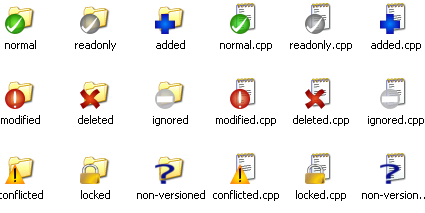
(Cette fois-ci, c'est la version TortoiseSVN pour Windows.)
Je préciserai la signification de chaque icône au moment voulu dans la suite du tuto.
Exporter les données
Comme on vient de le voir, le contrôle de version ajoute des dossiers /
données dans le répertoire local. Seulement, quand on a fini un projet,
on ne veut pas forcément que ces petites icônes superposées restent sur
les dossiers, ni que les dossiers cachés restent. Pour cela, il existe
la fonction d'export, qui, contrairement au
checkout, ne va faire que récupérer les données sans appliquer le contrôle de version.
Comme je disais, une fonction d'export, qui s'appelle brillamment...
export.
Eh oui c'est sacrément compliqué SVN, pas vrai ?
Puisque je parle du nom de la commande, montrons tout de suite comment la lancer sous UNIX :
Code : Console - Sélectionner | svn export --username "SdZ-Guest" --password "MySdZsvn" "http://svn.assembla.com/svn/Tuto-SdZ" |
Bien sûr, je montre l'exemple précis pour l'espace SdZ que j'ai créé ; à
partir de maintenant, je montrerai les commandes de manière générique :
Code : Console - Sélectionner | svn export --username "login" --password "mot_de_passe" "URL_du_Repository" |
On retrouve les mêmes options que pour le
checkout : ce n'est pas étonnant étant donné que l'on demande la même chose (enfin presque) au serveur.
C'est pareil pour Windows, en dehors du fait que l'on doit cliquer sur
Export et non sur
Checkout, la fenêtre de dialogue reste la même que celle du
checkout.
Vous pouvez maintenant vérifier dans les dossiers exportés, vous ne
trouverez pas de dossiers ni de fichiers en plus des fichiers de
données.
Des update...
Bien sûr, s'il y a plusieurs personnes à utiliser le même serveur (à
travailler sur le même projet), il semble évident qu'il faut un moyen
pour récupérer les données qui auraient été modifiées par certains.
Avant de commencer à travailler sur un fichier, il faut
systématiquement
mettre à jour le fichier sur lequel on veut travailler, juste avant de
travailler dessus (pour être sûr de ne pas commencer sur une version
obsolète). Or une mise à jour, en anglais, on appelle ça un
update. Nous avons donc notre nouvelle commande :
update.
Ce n'est pas parce que l'on a une très belle
icône superposée verte qui indique que les fichiers sont "normaux" que
les fichiers sont à jour. Ça veut seulement dire que vous ne les avez
pas modifiés depuis que vous les avez récupérés sur le serveur !
Pour UNIX
Il faut se placer dans le dossier que l'on veut
updater (mettre à jour), puis pour updater tout le projet se mettre sur le dossier racine, et on lance la commande suivante :
Code : Console - Sélectionner | svn update [dossier_à_updater] |
Ouh là, c'est compliqué !
Ceci dit, il se peut que vous rencontriez certains problèmes. S'il n'est
pas nécessaire de renseigner le login / mdp, contrairement au
checkout, c'est tout simplement que le login / mot de passe est retenu lors du
checkout.
Il est possible de ne pas le faire mémoriser à l'aide d'une option,
mais on verra toutes les options des différentes commandes plus tard (on
va déjà apprendre la base). Bref, si jamais vous avez besoin de
renseigner votre login / mdp, on vous le fera savoir et il vous sera
demandé de les écrire avant de télécharger les fichiers à jour. Sinon
vous pouvez utiliser les mêmes options que pour le
checkout (
--username et
--password).
Si vous ne renseignez pas le
dossier_à_updater, il prendra par défaut le dossier courant (comme pour chaque commande agissant sur un dossier).
Voilà, il n'y a pas besoin d'en savoir plus pour l'instant.
Pour Windows
Là non plus, ça ne va pas être compliqué. Il suffit de faire un clic droit sur le dossier que l'on veut
updater et de cliquer sur
SVN update. Ni plus ni moins.
Je ne vous fais pas de screenshot, c'est vraiment trop facile.

... et des commit
Une fois que l'on a récupéré les données avec le contrôle de version (à l'aide d'un
checkout), on veut pouvoir les modifier et renvoyer les fichiers au serveur. Pour cette action, on parle de
commit (vous me verrez ensuite souvent parler de
commiter pour dire que je vais faire un
commit).
Si l'on va chercher la définition de
to commit, on obtient (entre autres) : "
To put into a place to be kept safe or to be disposed of" et "
To consign for future use or reference or for preservation" .
En gros, mettre dans un espace pour le garder en sécurité et le mettre à disposition pour une utilisation future.
Donc, pour nous, ça va vouloir dire la chose suivante :
commit permet d'envoyer au serveur la
nouvelle version des fichiers que l'on a modifiés depuis leur dernière
récupération sur le serveur.
Pour tester, rien de plus simple.
Vous venez de récupérer les fichiers à l'aide d'un
checkout, a priori vous avez donc la dernière version (si vous avez fait le
checkout il y a longtemps, utilisez la commande
update pour mettre vos fichiers à jour).
Vous prenez un fichier au hasard (enfin, qui fasse quand même partie des fichiers sous contrôle de version
) et vous le modifiez (ajoutez une phrase au début, comme ça vous vous
repèrerez facilement). Ensuite, vous sauvegardez et revenez sur
l'explorateur de documents.
On constate que l'icône comporte maintenant un "!" rouge :
Cela signifie que le fichier a été modifié et que vous possédez une
version du fichier que le serveur n'a pas. Mais si l'on revient au
dossier parent (contenant le fichier modifié), on constate qu'il possède
cette icône rouge aussi : ça veut dire que le contenu du dossier (au
moins un fichier) n'est pas le même que celui situé sur le serveur.
Il faut donc lui envoyer les modifications que l'on a apportées.
Pour Windows
Clic droit sur le fichier ou sur n'importe quel dossier parent (faisant
partie des dossiers sous contrôle de version) du fichier.
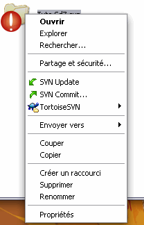

Dans mon cas, j'ai cliqué sur le dossier racine. On voit dans la fenêtre
que je peux laisser un message, et que le fichier modifié apparaît dans
une liste où l'on peut le décocher.
Les commentaires pourront ensuite être lus par les autres membres du
groupe de travail lorsqu'ils récupèreront les fichiers du serveur.
Les commentaires
Ces commentaires sont très utiles, et je vous encourage très vivement à
en laisser un pour que le suivant qui récupère les données, d'un simple
coup d'oeil sur les commentaires laissés, puisse savoir ce qui a été
fait sur les fichiers.
Exemple de commentaire utile :
Correction orthographique du compte rendu final.
Exemple de commentaire débile :
J'ai modifié le compte rendu final.
Pourquoi n'est-il pas utile de spécifier quels fichiers ont été modifiés ?
Tout simplement parce que lors du téléchargement des fichiers sur le
serveur, on sait quels fichiers ont été modifiés / créés / supprimés.
Lorsque l'on va sur la fenêtre des logs, le nom de la personne, le
numéro de version lors de son
commit
ainsi que les fichiers qu'il a créés / modifiés / supprimés sont
affichés automatiquement, le commentaire est là pour ajouter une
information en plus sur ce que l'on a fait à ces fichiers.
Il est donc complètement inutile d'ajouter dans son commentaire ce que
la personne peut lire plus clairement et plus rapidement sur la fenêtre.
La liste des fichiers modifiés
Lorsque l'on clique sur un dossier pour faire un
commit, la fenêtre propose de
commiter
tous les fichiers contenus dans ce dossier et qui ont été modifiés. Si
l'on ne veut pas envoyer l'un de ces fichiers au serveur, il suffit de
le décocher.
Si vous avez ajouté manuellement des
fichiers (non versionnés) dans le dossier (versionné), la fenêtre
affichera ces fichiers non versionnés, mais décochés par défaut pour ne
pas les envoyer au serveur. Si vous les cochez, il les enverra au
serveur comme nouveau fichier à prendre en compte dans le contrôle de
version. Le prochain chapitre expliquera les différentes façons
d'ajouter un fichier.
Si l'on clique sur un fichier, la fenêtre ne proposera que d'envoyer le
fichier en question (s'il a été modifié). Pour être sûr d'envoyer toutes
les modifications d'un seul coup, il suffit de faire un
commit sur le dossier racine, il prendra au moins toutes les modifications en compte.
Pour UNIX
Eh bien pour vous, c'est pareil. Il faut se mettre dans le dossier voulu
(celui dans lequel il y a quelque chose à commiter ou un parent).
Idéalement le dossier racine, et ensuite on lance la commande suivante :
Code : Console - Sélectionner | svn commit fichier_ou_dossier_à_commiter -m "mon_commentaire" |
On peut remplacer
commit par
ci, ce qui nous donne :
Code : Console - Sélectionner | svn ci fichier_ou_dossier_à_commiter -m "mon commentaire" |
-m indique que l'argument suivant est le message à mettre dans le log (journal).
Le -m "mon_commentaire" n'est, normalement, pas obligatoire. Il arrive parfois que le commit
échoue parce que vous n'avez pas mis de commentaire. Vous obtiendrez un
message d'erreur stipulant que SVN ne trouve pas d'éditeur externe pour
obtenir le message de log. Si c'est le cas, pour passer à travers cette
erreur, même si vous ne mettez pas de commentaire, mettez -m "".
On retrouve les mêmes options que pour Windows à quelques petits détails
près. Les fichiers ajoutés manuellement dans le dossier à commiter et
qui ne sont pas sous contrôle de version NE seront PAS envoyés au
serveur.
L'argument fichier_ou_dossier_à_commiter
n'est pas obligatoire. Si l'on ne met rien, il prendra par défaut le
dossier courant. En revanche, on peut aussi donner un nom de fichier
pour ne commiter que le fichier.
Voilà : maintenant vous avez un peu mieux compris comment ça marche. Au prochain chapitre, on accélère le mouvement.
Gérer son arborescence
Nous allons, dans ce chapitre, apprendre à gérer l'arborescence de fichiers. Nous allons donc voir :
- comment ajouter un fichier ;
- comment supprimer un fichier (si, si, vous ne rêvez pas) ;
- l'ajout / suppression de dossiers ;
- la copie et le déplacement de fichiers et de dossiers ;
- comment renommer des fichiers et dossiers ;
- euh... c'est tout !
Parce que c'est vrai que mettre à jour des données, c'est bien mignon,
mais s'il n'y a personne pour ajouter des fichiers au début... On n'ira
pas très loin...

Commençons !
La gestion avec Windows
Je change ici un peu de méthode parce que cette fois-ci, contrairement
aux autres commandes, c'est très différent entre TortoiseSVN et le
terminal. Bref, petit changement de façon de faire, mais sans grande
incidence.
Création de fichiers et de dossiers
Vous allez voir que c'est difficile de faire plus simple que cela.
Vous créez vos fichiers / dossiers comme vous l'avez toujours fait dans
l'exploreur. Ensuite, vous sélectionnez les fichiers / dossiers que vous
voulez rajouter, et il suffit de faire un clic droit >>
TortoiseSVN >>
Add. Et voilà : compliqué, n'est-ce pas ?
Attention, une fois que vous avez fait le Add,
les fichiers ne sont pas encore envoyés au serveur, ils sont seulement
indiqués comme des fichiers qu'il va falloir rajouter sur le serveur.
Pour les envoyer définitivement, il faut faire un commit.
Ce qui nous donne - d'un point de vue icône - ce qui suit.
Fichier créé :

Fichier ajouté :
Fichier commité : 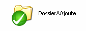
Suppression de fichier / dossier (et renommage aussi ?)
On va supprimer le fichier que l'on vient de créer, mais on va le renommer avant !
Renommage : clic droit,
TortoiseSVN,
Rename...
Encore une fois la difficulté est au rendez-vous !
Une ÉNORME erreur consiste à renommer de la manière habituelle. C'est-à-dire avec F2 ou un clic droit et Renommer. Parce que SVN va interpréter ça comme "il me manque un fichier et j'en ai un en plus". Donc au commit, il va dire qu'il manque un fichier et ne va pas rajouter l'autre parce que vous ne l'aurez pas ajouté.
Maintenant qu'on a vu comment renommer, il ne reste plus qu'à savoir supprimer !
Attention, grosse difficulté en perspective (encore une fois) : clic droit >>
TortoiseSVN >>
Delete.
On voit à nouveau que le fichier n'est pas supprimé mais qu'une croix rouge apparaît comme ici :

Cette croix rouge signifie qu'au prochain
commit,
de même que le ?+? bleu va rajouter le fichier sur le serveur, le
fichier ne va plus faire partie des versions suivantes sur le serveur.
Certains auront remarqué qu'il y a une
autre méthode (peut-être même plus rapide) offerte par l'interface de
TortoiseSVN. Même si elle est plus rapide, je la déconseille parce
qu'elle ne reflète pas ce qui se passe vraiment. Mais bon, je vais quand
même la présenter.
Si vous ajoutez ou supprimez normalement un fichier, au moment du commit,
TortoiseSVN va vous lister toutes les actions qu'il va commiter, il est
possible de décocher les cases des actions qu'on ne voudra pas
commiter. En revanche, TortoiseSVN présente aussi toutes les actions
qu'il ne va pas commiter (comme les fichiers non versionnés ou les
fichiers supprimés). Il suffit de cocher la case à côté pour qu'il les
prenne en compte !
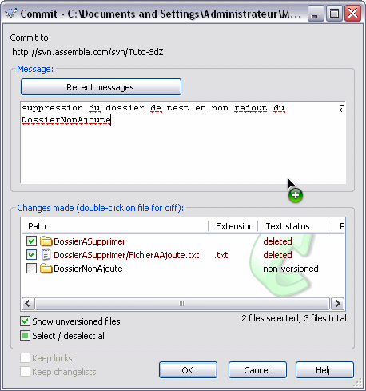
Copie, déplacement, export
Encore une fois, faire un copier-coller de fichier versionné n'est pas
très efficace puisque ces fichiers correspondront toujours à la même URL
sur le SVN et donc les deux copies feront des
commit
au même endroit sur le serveur. Implication directe : même si l'on a
deux copies sur le client, on n'en aura pas sur le serveur ; donc, ça ne
sert à rien.
Comment faire pour déplacer et copier subtilement des fichiers, alors ?
En utilisant la fonction de copie du SVN. Pour la trouver, il suffit de faire un
drag & drop avec le clic droit d'un fichier versionné.
On obtient le choix dans la liste d'actions suivantes :
Move permet de déplacer le fichier, on peut aussi le renommer au passage.
Copy permet de créer une copie du fichier (
le fichier sera aussi copié sur le serveur) ; à nouveau, on peut renommer au passage.
Export permet d'exporter les fichiers (comme vu dans le chapitre précédent).
Je n'ai pas très bien compris la différence entre Export et Export all ! Dans le doute, moi, j'utilise Export : si quelqu'un trouve la différence, je suis intéressé.
TortoiseSVN est bien fait, il ne vous
propose les options que quand c'est possible ; si vous essayez de faire
une copie ou un déplacement du fichier en dehors du répertoire de
travail, il ne va pas vous proposer la commande !
Voilà, c'est tout pour TortoiseSVN, je vous conseille quand même de lire
la partie pour UNIX pour comprendre comment ça se passe.
Et sous UNIX
Commençons maintenant avec la ligne de commande. Désolé, mais ce ne
sera pas aussi simple (encore que ce ne sera pas compliqué non plus
).
Ajout et suppression
Prenez l'habitude de penser que pour toutes
les commandes SVN agissant sur un dossier, elle agissent par défaut sur
le dossier courant sauf si l'on rentre le chemin vers un autre dossier /
fichier dans la commande.
Ajouter un fichier ou un dossier
Code : Console - Sélectionner | svn add [fichiers_ou_dossiers_a_ajouter] |
Si l'on ajoute un dossier, il va agir récursivement et ajouter toute
l'arborescence à partir du dossier. Si l'on ne veut pas utiliser le fait
qu'il ajoute l'arborescence, il faut rajouter l'option
-N pour "Non récursif".
Il est également possible de rajouter un fichier à l'aide de la commande
mkdir (comme en shell). Ce qui nous donne donc :
Code : Console - Sélectionner | svn mkdir Nom_du_dossier [nom_autre_dossier] [...] |
Supprimer un fichier ou dossier
Code : Console - Sélectionner | svn delete [fichier_ou_dossier_a_supprimer] [--force] |
Cette commande a plusieurs noms, on peut mettre delete, remove, del ou rm.
Si vous venez de créer un fichier (ou un dossier) et que vous avez fait
add, si vous essayez de faire un
delete dessus avant de commiter, il va afficher un message d'erreur stipulant qu'il faut utiliser
--force dans les options. Cette option
--force sert, comme son nom l'indique, à forcer la commande, même si le SVN râle !
Ces deux commandes n'agissent que sur le répertoire local (la
working copy). Il faut ensuite faire un
commit pour valider les changements sur le serveur.
Si l'on regarde l'aide SVN (--help), on constate que pour le delete, il est également possible de renseigner une URL !
Code : Bash - Sélectionner1 | svn rm URL [--username] [--password]
|
Cette commande agit directement sur le serveur SVN et donc effectue un
commit immédiat. Bien sûr, du fait que l'on agit sur le serveur, tous les arguments d'authentification sont disponibles.
Copie, déplacement, renommage, export
Cette partie va également être très simple étant donné que les commandes
sont les mêmes qu'en shell (mais avec un SVN devant). Nous obtenons
donc ce qui suit.
Pour la copie
Code : Console - Sélectionner | svn copy (ou cp) Dossier_a_copier Emplacement_ou_copier |
Si vous regardez dans le manuel de
copy, il est possible de faire différentes sortes de
copy avec des
PATH ou des URL. L'utilisation de l'URL est là pour agir directement sur le serveur (donc, de faire un
commit
immédiat). On voit aussi qu'il parle de branche avec une copy d'URL à
URL, nous verrons l'utilisation des branches dans une autre partie
(utilisation avancé du SVN). Pour l'instant je vous conseille de
n'utiliser que la version locale (faire une copy sur votre répertoire de
travail local et le commiter après) pour être sûr de ne pas faire de
bêtise avant de commiter.
Et pour le déplacement
Code : Console - Sélectionner | svn mv (ou move, ren et rename) Dossier_ou_fichier_source Dossier_ou_fichier_destination |
Il n'y a pas grand-chose à dire sur les options spéciales de cette commande. Faire un
move revient au même que de faire une copie suivie d'un
delete.
En revanche, il est vrai que cette commande sert également à renommer.
Pour renommer, il suffit de mettre le nom complet de la cible à la place
du dossier dans lequel le déplacer. Exemple :
Code : Bash - Sélectionner1 | svn mv Dossier\ 1/fichier1.txt Dossier\ 1/fichier2.txt
|
Cette commande renomme le "fichier1.txt" présent dans le "Dossier 1" en
"fichier2.txt" (pas de déplacement, il reste dans le "Dossier 1").
Enfin pour l'export
Eh bien oui, on revient à la commande
export pour vous montrer qu'il n'est pas nécessaire d'exporter depuis le
repository mais que l'on peut également exporter depuis ses répertoires locaux.
Code : Console - Sélectionner | svn export Dossier_versionne_local Dossier_destination |
Et voilà, rien de plus simple.
Vous avez maintenant presque toutes les clefs en main. Prochain
chapitre, on apprend à résoudre les conflits et vous pourrez vous servir
du SVN sans aucun souci (ou presque
).
Communiquez avec le SVN
Ce chapitre est un peu particulier : il ne va pas vous apprendre à
faire plus de choses sur le SVN mais au contraire, il va vous apprendre à
l'écouter (c'est mignon ).
Comprendre ce qu'il se passe est primordial ; or, il faut communiquer au
maximum pour suivre ce qui se produit. Comment voulez-vous continuer à
travailler sur un fichier qui a déjà été modifié par d'autres personnes
sans que vous ne vous en rendiez compte ?
Ce tuto est donc là pour vous apprendre à comprendre les informations
que vous envoie le SVN, mais plus encore, à aller y chercher ces
informations.
Comprendre ce que SVN nous dit
Eh oui, il faut d'abord comprendre tous les messages que nous envoie SVN avant d'agir !
Des informations qui viennent à nous
Dans quels cas obtient-on un retour sur information ?
Presque tout le temps, en fait. Vous l'avez déjà remarqué, quand vous faites un
Checkout, un
Update, un
Commit ou un
Export
: à chaque fois, que ce soit sous UNIX ou sous Windows, SVN vous donne
des informations sur l'action en cours. Nous allons maintenant étudier
ces informations.
Code : Console - Sélectionner | A Tuto-SdZ/Fichier 1.txt
A Tuto-SdZ/Dossier 1
A Tuto-SdZ/Dossier 1/Fichier1.1.txt
A Tuto-SdZ/Dossier 2
A Tuto-SdZ/Dossier 2/Fichier2.1.txt
Checked out revision 5. |

Voici les informations que l'on trouve lors d'un
Checkout sur le
repository.
Le message est beaucoup plus compréhensible sur la fenêtre tortoiseSVN,
on comprend bien que l'on est à la cinquième révision (version) et que
cinq fichiers et dossiers ont été ajoutés.
On comprend donc également qu'en ligne de commande, un 'A' dans la première colonne signifie
Added (Ajouté).
Comme dit précédemment, on retrouve ces fenêtres lors d'une action de modification sur le serveur (
commit,
update,
add ou autre). Bien sûr, il y a un code complet (eh oui, on ne fait pas qu'ajouter des éléments

).
Aller chercher ces informations
Pour comprendre tout ce que l'on va pouvoir trouver, on va utiliser la commande
status.
Cette commande permet, étrangement, d'obtenir le statut des fichiers et dossiers.
Pour utiliser la commande, vous allez donc taper :
Code : Console - Sélectionner | svn status [fichier_ou_dossier_a_statuer] # vous pouvez utiliser st ou stat à la place de status. |
Et là, si vous n'avez rien touché depuis votre dernier
update, vous devriez ne trouver... RIEN.
Déception...
Il faut en fait ajouter quelques options :
-u pour comparer son
Working Copy (sa copie locale) avec le
repository ;
-v pour afficher tous les éléments (même ceux qui n'ont pas été modifiés).
Il faut comprendre que
status vous
fait un bilan des modifications qu'ont subi vos éléments, il va
seulement vous afficher les éléments qu'il est utile de montrer. Par
défaut, il ne va donc pas montrer les éléments qui n'ont pas été
modifiés.
Reprenons la commande avec les options
-uv :
Code : Console - Sélectionner | svn st -uv
5 2 mvandamme Fichier 1.txt
5 1 mvandamme Dossier 1/Fichier1.1.txt
5 1 mvandamme Dossier 1
5 1 mvandamme Dossier 2/Fichier2.1.txt
5 1 mvandamme Dossier 2
5 5 mvandamme . |
On obtient ici, grâce au
-v (pour
verbose), le détail de tous les dossiers et fichiers dans l'arborescence à partir du dossier choisi.
Le premier chiffre que l'on voit est celui de la version globale de l'élément (du dernier
update
fait sur l'élément), le deuxième est la version de l'élément (combien
de fois il a été modifié). "Fichier 1.txt" a donc été modifié deux fois
depuis le début, mais il a déjà "traversé" cinq versions (où d'autres
fichiers ont été
commités).
On voit un grand espace libre avant le premier chiffre, mais qu'est-ce donc ?
Bien comprendre les informations
Cet espace libre est là pour les informations en cas de modification.
Allons donc voir la documentation (ça doit devenir un réflexe).
Code : Console - Sélectionner
Secret (cliquez pour afficher)Code : Console - Sélectionner | prompt$ svn --help status
status (stat, st): Print the status of working copy files and directories.
usage: status [PATH...]
With no args, print only locally modified items (no network access).
With -u, add working revision and server out-of-date information.
With -v, print full revision information on every item.
The first six columns in the output are each one character wide:
First column: Says if item was added, deleted, or otherwise changed
' ' no modifications
'A' Added
'C' Conflicted
'D' Deleted
'I' Ignored
'M' Modified
'R' Replaced
'X' item is unversioned, but is used by an externals definition
'?' item is not under version control
'!' item is missing (removed by non-svn command) or incomplete
'~' versioned item obstructed by some item of a different kind
Second column: Modifications of a file's or directory's properties
' ' no modifications
'C' Conflicted
'M' Modified
Third column: Whether the working copy directory is locked
' ' not locked
'L' locked
Fourth column: Scheduled commit will contain addition-with-history
' ' no history scheduled with commit
'+' history scheduled with commit
Fifth column: Whether the item is switched relative to its parent
' ' normal
'S' switched
Sixth column: Repository lock token
(without -u)
' ' no lock token
'K' lock token present
(with -u)
' ' not locked in repository, no lock token
'K' locked in repository, lock toKen present
'O' locked in repository, lock token in some Other working copy
'T' locked in repository, lock token present but sTolen
'B' not locked in repository, lock token present but Broken
The out-of-date information appears in the eighth column (with -u):
'*' a newer revision exists on the server
' ' the working copy is up to date
Remaining fields are variable width and delimited by spaces:
The working revision (with -u or -v)
The last committed revision and last committed author (with -v)
The working copy path is always the final field, so it can
include spaces.
Example output:
svn status wc
M wc/bar.c
A + wc/qax.c
svn status -u wc
M 965 wc/bar.c
* 965 wc/foo.c
A + 965 wc/qax.c
Status against revision: 981
svn status --show-updates --verbose wc
M 965 938 kfogel wc/bar.c
* 965 922 sussman wc/foo.c
A + 965 687 joe wc/qax.c
965 687 joe wc/zig.c
Status against revision: 981
Valid options:
-u [--show-updates] : display update information
-v [--verbose] : print extra information
-N [--non-recursive] : operate on single directory only
-q [--quiet] : print as little as possible
--no-ignore : disregard default and svn:ignore property ignores
--incremental : give output suitable for concatenation
--xml : output in XML
--username arg : specify a username ARG
--password arg : specify a password ARG
--no-auth-cache : do not cache authentication tokens
--non-interactive : do no interactive prompting
--config-dir arg : read user configuration files from directory ARG
--ignore-externals : ignore externals definitions |
Que faut-il comprendre de ce manuel ? Il y a énormément d'informations,
je ne vais donc en traiter qu'une partie (rassurez-vous, ce sera déjà
amplement suffisant).
Premièrement, on voit la différence entre l'appel sans argument, avec
-u et / ou avec
-v :
- sans argument : il ne montre que les éléments modifiés depuis le dernier update ;
- -u : il compare les éléments avec ceux sur le serveur (connexion avec le serveur nécessaire, SVN n'est pas devin) ;
- -v : il affiche toutes les informations, même pour les éléments non modifiés.
Ensuite sont présentées les valeurs que peuvent prendre chacune des huit
premières colonnes. Nous n'allons nous intéresser qu'à trois d'entre
elles : la première, la septième et la huitième.
Commençons par la plus simple : la septième est toujours vide, c'est juste une espace.
Continuons un peu plus sérieusement. La première colonne présente les modifications apportées localement aux éléments :
- ' ' : aucune modification ;
- A : ajouté ;
- D : supprimé ;
- C : en conflit ;
- I : ignoré ;
- M : modifié ;
- R : remplacé ;
- ? : non-versionné ;
- ! : manquant.
La huitième colonne, quant à elle, présente l'état de l'élément sur le
serveur par rapport à notre version (cette colonne n'apparaît que si on
active
-u) :
- ' ' : aucune nouvelle version sur le serveur (votre fichier est à jour) ;
- * : une nouvelle version est disponible sur le serveur.
On comprend donc vite d'après ces définitions qu'obtenir la ligne suivante n'est pas très bon signe :
Code : Console - Sélectionner | prompt$ svn st -u
M * 5 Fichier 1.txt |
On est ici dans le cas d'un éventuel futur conflit. Étant donné que l'on
a modifié le fichier depuis sa récupération, mais qu'une autre version a
été envoyée au serveur, si on envoie notre version, le serveur devra
supprimer celle qui a auparavant été
commitée,
et les modifications apportées par l'autre personne ne seront plus.
Ceci ne peut bien sûr pas être un comportement par défaut. Le serveur va
refuser votre
commit. Il va donc falloir résoudre le problème localement avant de
commiter la solution.
Nous n'allons pas apprendre à résoudre ces problèmes dans ce chapitre, mais dans le prochain.
On retrouve la première colonne lors des informations suite à un commit, à un update, à un checkout et à un export.
Tout ce que nous venons de voir sur la première colonne est, bien sûr,
également valable dans ces autres cas, la convention reste la même.
Et pour Windows...
Eh bien pour Windows, c'est pareil, mais en plus lisible. En effet
toutes ces informations sont récupérables via l'interface graphique.
Clic droit >>
TortoiseSVN >>
Check for Modifications.
On obtient un tableau, sauf que tout est écrit entièrement (et non pas par abréviation), donc beaucoup plus simple.
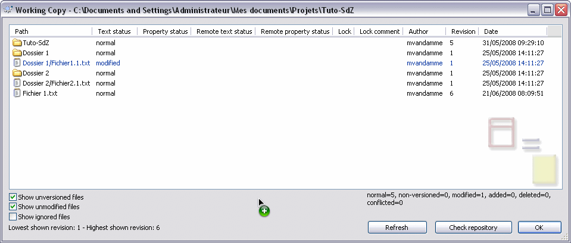Fenêtre de status avec TortoiseSVN.
On retrouve ici les champs que l'on pouvait trouver dans les huit
colonnes sous UNIX. Comme on peut le voir, tout est écrit. Petit luxe,
on a même un résumé du nombre de fichiers dans chaque catégorie ainsi
que le numéro des versions maximum et minimum.
Eh, mais comment ça se fait qu'un fichier est à la 6e révision alors que le dossier racine n'est qu'à la 5e ?
Tout simplement parce que, lors du
commit, je n'ai pas
commité
le dossier racine (Tuto SdZ) mais seulement le fichier. SVN a donc
modifié les propriétés du fichier (sa version), mais pas celle du reste
(du dossier racine, par exemple). Cela fonctionne de la même façon sous
UNIX. N'hésitez donc pas à faire
régulièrement des
update sur la racine.
Enfin, on ne le voit pas bien sur mon exemple, mais il y a un code de couleurs pour les éléments.
- Bleu : élement modifié localement.
- Violet : élément ajouté.
- Rouge foncé : élément manquant.
- Vert : élément modifié localement et sur le serveur. Ils seront mergés lors d'un update, ou bien génèreront un conflit.
- Rouge clair : élément modifié localement et supprimé sur le serveur, ou inversement. Il y aura forcément un conflit lors de l'update.
- Noir : aucun changement, ou fichier non versionné.
Toujours plus d'informations
Nous allons voir ici quels sont les moyens d'obtenir encore plus d'informations.
Nous venons de voir, dans la première partie, que si nous voulions des
informations sur l'état des éléments présents sur notre répertoire local
par rapport au serveur, il fallait utiliser la commande
status.
Mais il existe d'autres commandes pour obtenir d'autres informations.
Voici de quoi vous en convaincre et obtenir une liste de toutes les
commandes accessibles.
Code : Console - Sélectionner
Code : Console - Sélectionner | usage: svn <subcommand> [options] [args]
Subversion command-line client, version 1.4.4.
Type 'svn help <subcommand>' for help on a specific subcommand.
Type 'svn --version' to see the program version and RA modules
or 'svn --version --quiet' to see just the version number.
Most subcommands take file and/or directory arguments, recursing
on the directories. If no arguments are supplied to such a
command, it recurses on the current directory (inclusive) by default.
Available subcommands:
add
blame (praise, annotate, ann)
cat
checkout (co)
cleanup
commit (ci)
copy (cp)
delete (del, remove, rm)
diff (di)
export
help (?, h)
import
info
list (ls)
lock
log
merge
mkdir
move (mv, rename, ren)
propdel (pdel, pd)
propedit (pedit, pe)
propget (pget, pg)
proplist (plist, pl)
propset (pset, ps)
resolved
revert
status (stat, st)
switch (sw)
unlock
update (up)
Subversion is a tool for version control.
For additional information, see http://subversion.tigris.org/ |
Dans cette liste, vous reconnaissez les commandes que l'on a déjà utilisées :
add, checkout, commit, copy, delete, export, help, mkdir, move, status, update.
Et celles que l'on n'a pas encore vues :
blame, cat, cleanup, diff, import, info, list, lock, log, merge, prop*, resolved, revert, switch, unlock.
Ici, nous allons voir
list, log, info et cat.
cat et list
Ces deux commandes sont très simples, elles font la même chose qu'en shell...
cat
cat permet d'afficher le contenu d'un fichier :
Code : Console - Sélectionner | svn cat Fichier_ou_URL [-r revision] [--username login] [--password mdp] |
Pour l'afficher, il faut préciser un fichier ou bien une URL si le
fichier ne se trouve pas sur notre répertoire local. Comme il faut
accéder au serveur, il est possible (si on ne les a pas gardés dans le
cache) de renseigner ses login et mot de passe. Il reste une nouvelle
option que nous allons voir, la possibilité de préciser dans quelle
version (révision) on souhaite voir le fichier. Cette version peut être
demandée de diverses façons :
- par le numéro de la version si on le connaît (1, 2, 13, 40...) ;
- en utilisant {DATE} : la date entre accolades pour avoir la plus récente des versions disponibles de l'instant ;
- avec HEAD : la dernière version en date dans le repository (sur le serveur) ;
- grâce à BASE : la version du dernier update fait sur la Working Copy (BASE sera utile par la suite lorsqu'on voudra comparer deux versions) ;
- avec COMMITTED : la dernière version pour laquelle un commit a été effectué (mais inférieure ou égale à la version de la copie locale) ;
- enfin avec PREV, pour la version juste avant COMMITTED.
Il n'est pas possible d'utiliser les mots clefs BASE, COMMITTED ou PREV
avec une URL étant donné qu'ils font référence à la version disponible
sur la copie de travail (copie locale). On ne peut les utiliser que
lorsque l'on donne un chemin vers le fichier dans une copie de travail.
svn cat affiche le fichier demandé dans la version voulue. Si vous avez fait des modifications locales et que vous faites svn cat, il vous affichera le fichier tel qu'il était lorsque vous l'avez récupéré, sans vos modifications.
list (ls)
list permet, comme en shell, de lister le contenu d'un répertoire. Et bien sûr, comme pour
cat, on a des options en plus :
Code : Console - Sélectionner | svn list (ou ls) [dossier_à_lister] [-r Revision] [-v] [-R] [--username login] [--password mdp] |
Dans ces options, on retrouve :
- le dossier cible s'il est différent du dossier dans lequel on se trouve ;
- la révision si on veut un aperçu des fichiers à une autre version ;
- le login et le mot de passe pour l'accès au serveur ;
- le -v (pour verbose) que nous avons déjà rencontré avec status et qui permet d'afficher toutes les informations sur les éléments.
Il reste le
-R que je n'ai pas encore
présenté. Il permet, tout simplement, de descendre récursivement
l'arborescence à partir du dossier choisi (c'est la même option en shell
; pour vous en convaincre, essayez : '
man ls | grep -e -R').
Cette option est donc très utile si vous voulez obtenir la liste de
tous les éléments disponibles dans une arborescence sans avoir à faire
svn ls sur tous les sous-dossiers.
Attention, svn ls ne liste que les fichiers versionnés. Si vous voulez aussi afficher les autres, faites ls !
Et pour Windows
Eh bien,
cat et
list
n'ont pas vraiment lieu d'être étant donné que l'on utilise une
interface graphique. Cependant, il est utile de pouvoir consulter l'état
du
repository aux différentes versions. Pour ça, on trouve le "
Repository Browser".
Clic droit >>
TortoiseSVN >>
Repo-browser :
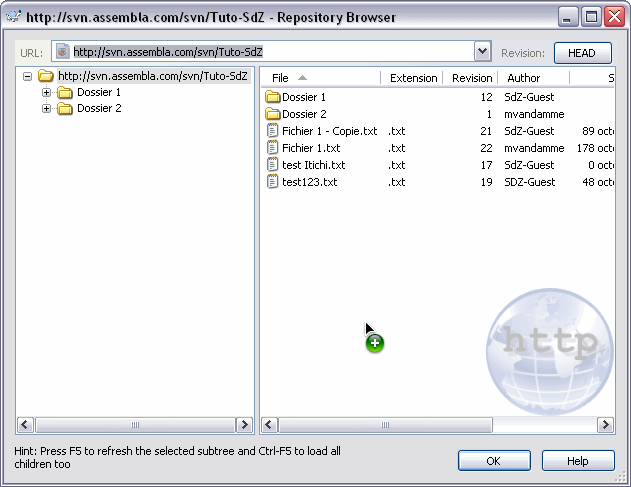
Cet outil permet de parcourir l'arborescence à la version demandée.
Si vous faites un clic droit sur un élément, vous trouverez plein d'actions disponibles...
info
La commande
info vous donne... des informations.
Nous allons donc voir les informations que l'on peut obtenir.
Comme vous devriez en prendre l'habitude, on tape :
Code : Console - Sélectionner
Et on obtient le manuel d'utilisation de la commande. De ce manuel, on déduit que la commande se lance de la façon suivante :
Code : Console - Sélectionner | svn info [Target ...] [-r Revision] [-R] [--targets Fichier_darguments] [--username login] [--password mdp] |
Eh oui, plus on avance, et plus je présente d'options !
Alors, dans toutes ces options vous connaissez déjà :
Target (fichier, dossier ou URL cible),
-r (révision),
-R (Récursif),
--username (login) et
--password (mot de passe).
Nous avons un petit nouveau qui s'invite :
--target.
Cette option est un peu... bizarre, spéciale. Elle permet de spécifier
un fichier qui contient des liens vers d'autres fichiers, fichiers que
vous voulez ajouter en argument de la commande.
Pas très bien compris...

Un petit exemple et tout va rentrer dans l'ordre.
Je lance le code suivant :
Code : Console - Sélectionner | svn info Dossier\ 1/ --targets argInfo |
Avec comme fichier
argInfo :
Code : Autre - Sélectionner1
2
| /Users/mvandamme/Documents/Boulot/Tuto-SdZ/Tuto-SdZ/Fichier 1.txt
/Users/mvandamme/Documents/Boulot/Tuto-SdZ/Tuto-SdZ/Dossier 2/Fichier2.1.txt |
Et j'obtiens comme résultat :
Code : Console - Sélectionner | Path: Dossier 1
URL: http://svn.assembla.com/svn/Tuto-SdZ/Dossier%201
Repository Root: http://svn.assembla.com/svn/Tuto-SdZ
Repository UUID: d7ba3245-3e7b-42d0-9cd4-356c8b94b330
Revision: 18
Node Kind: directory
Schedule: normal
Last Changed Author: SdZ-Guest
Last Changed Rev: 12
Last Changed Date: 2008-06-21 13:35:11 +0200 (Sam, 21 jui 2008)
Path: /Users/mvandamme/Documents/Boulot/Tuto-SdZ/Tuto-SdZ/Fichier 1.txt
Name: Fichier 1.txt
URL: http://svn.assembla.com/svn/Tuto-SdZ/Fichier%201.txt
Repository Root: http://svn.assembla.com/svn/Tuto-SdZ
Repository UUID: d7ba3245-3e7b-42d0-9cd4-356c8b94b330
Revision: 18
Node Kind: file
Schedule: normal
Last Changed Author: mvandamme
Last Changed Rev: 16
Last Changed Date: 2008-06-22 16:10:28 +0200 (Dim, 22 jui 2008)
Text Last Updated: 2008-06-22 21:44:57 +0200 (Dim, 22 jui 2008)
Checksum: dc9a920d91087fcc9032192a8fda9e9c
Path: /Users/mvandamme/Documents/Boulot/Tuto-SdZ/Tuto-SdZ/Dossier 2/Fichier2.1.txt
Name: Fichier2.1.txt
URL: http://svn.assembla.com/svn/Tuto-SdZ/Dossier%202/Fichier2.1.txt
Repository Root: http://svn.assembla.com/svn/Tuto-SdZ
Repository UUID: d7ba3245-3e7b-42d0-9cd4-356c8b94b330
Revision: 18
Node Kind: file
Schedule: normal
Last Changed Author: mvandamme
Last Changed Rev: 1
Last Changed Date: 2008-05-25 15:11:27 +0200 (Dim, 25 mai 2008)
Text Last Updated: 2008-05-31 12:31:44 +0200 (Sam, 31 mai 2008)
Checksum: d41d8cd98f00b204e9800998ecf8427e |
On remarque que les fichiers indiqués dans le fichier
target ont été pris en compte (voici donc l'utilité de cette option).
Si vous donnez un fichier contenant des
lignes qui ne sont pas des chemins vers d'autres fichiers ou des
dossiers versionnés, SVN les ignorera tout simplement et vous mettra en
sortie (en plus du résultat de svn info) chaque "mauvaise" ligne suivie de (Not a versioned resource).
Intéressons-nous maintenant au contenu du résultat obtenu.
- Path : donne le chemin vers l'élément.
- Name : nom du fichier (uniquement pour les fichiers).
- URL : donne l'URL de l'élément sur le serveur.
- Repository Root : donne l'URL de la racine du repository.
- Repository UUID : IDentifiant Universellement Unique du repository
(tout ce dont vous devez vous rappeler, c'est qu'il s'agit d'un
identifiant unique, nous verrons son utilité dans l'utilisation avancée
de SVN).
- Revision : version de l'élément.
- Node Kind : type de l'élément.
- Schedule : prévision pour l'élément (il est possible de donner des prévisions de ce que l'on va faire à l'élément).
- Last Changed Author : dernière personne à l'avoir modifié (commité).
- Last Changed Rev : dernière version dans laquelle l'élément a été modifié.
- Last Changed Date : dernière date à laquelle l'élément a été modifié.
- Text Last Updated : dernier update du fichier effectué (par notre working copy).
- Checksum : somme de contrôle pour vérifier la validité des données. Comprenez bien que le contrôle effectué par un checksum n'est pas une garantie de la validité des données (si vous voulez comprendre le fonctionnement d'une somme de contrôle : http://fr.wikipedia.org/wiki/Checksum et http://en.wikipedia.org/wiki/Checksum).
Je n'ai pas trouvé d'équivalent sous TortoiseSVN. Il est vrai que les informations obtenues sont très générales (Revision, URL, Path, etc.), elles se trouvent donc un peu dans toutes les autres fenêtres.
log
Voici la commande la plus importante de toutes (ou tout du moins celle que vous devriez utiliser le plus souvent).
log permet d'afficher les messages de log laissés.
Pour apprendre à utiliser la commande, comme cela devrait devenir une habitude, on regarde le manuel :
Code : Console - Sélectionner
Le manuel nous informe que l'utilisation de la commande se fait comme suit :
Code : Console - Sélectionner | svn log [Chemin] [-r Revision] [-v] [--targets Fichier] [--username login] [--password mdp] [--limit nb_dentré_max] |
Dans ces options, nous n'avons pas vu
--limit ni
-r Revision qui cette fois-ci ne s'utilisent pas de la même façon.
Commençons par
-r Revision. Cette fois, on ne demande pas une révision, mais un ensemble de révisions. À la place de faire
-r rev, il faut faire
-r Rev1:Rev2 avec
Rev1 la révision de laquelle on part, et
Rev2 la révision à laquelle on veut arriver.
Par défaut, si rien n'est précisé, les révisions affichées seront
BASE:1, ce qui signifie de la version actuellement sur la
Working Copy à la première version.
Que se passe-t-il quand on fait svn log -r 1:BASE ?
--limit nb_dentré_max, quant à lui, informe du nombre maximum de messages de log à afficher.
--limit 10 dit au SVN qu'on ne veut
au maximum que 10 messages de log affichés (s'il y en a moins, il en affichera moins).
Euh, mais elle ne sert à rien cette option...
si on ne veut pas plus de 10 messages de log, ne suffit-il pas de ne
demander les logs que pour les 10 dernières versions, tout simplement ?
Eh bien...
NON !
Bon, j'en fais peut-être un peu trop, là...
Mais pourquoi non ? Eh bien pour vous convaincre, prenons un exemple. Si
je demande les messages de log d'un sous-dossier seulement et non plus
du dossier racine, rien ne dit qu'à chaque fois que quelqu'un aura fait
un
commit il aura modifié des choses
dans ce dossier. Et justement, pour ces versions où rien n'aura été
modifié dans le dossier, la commande
log
ne va pas afficher le log. Il en découle que même si vous demandez les
logs pour les versions allant de 1 à 100 d'un élément, il se peut très
bien que SVN ne vous affiche que quelques logs.
Maintenant que nous savons comment nous en servir, utilisons-la (je suis dans le dossier racine) :
Code : Console - Sélectionner | svn log --limit 5
------------------------------------------------------------------------
r18 | SdZ-Guest | 2008-06-22 16:12:56 +0200 (Dim, 22 jui 2008) | 1 line
------------------------------------------------------------------------
r17 | SdZ-Guest | 2008-06-22 16:11:11 +0200 (Dim, 22 jui 2008) | 1 line
test de fichier de itichi.
------------------------------------------------------------------------
r16 | mvandamme | 2008-06-22 16:10:28 +0200 (Dim, 22 jui 2008) | 1 line
ajout d'un ligne pour l'utilisation de cat
------------------------------------------------------------------------
r15 | mvandamme | 2008-06-22 13:04:27 +0200 (Dim, 22 jui 2008) | 1 line
Ajout de text pour tester le cat
------------------------------------------------------------------------
r14 | Sdz-Guest | 2008-06-21 15:32:02 +0200 (Sam, 21 jui 2008) | 1 line
------------------------------------------------------------------------ |
On trouve comme informations :
- le numéro de version ;
- l'auteur du commit ;
- la date du commit (notez comment les dates sont affichées, c'est le même format qu'il faut utiliser pour renseigner une date avec -r) ;
- le nombre de lignes du commentaire ;
- plus bas, le commentaire lui-même ;
- puis une ligne de '-' pour délimiter l'autre message de log.
On peut voir sur cet exemple de log que de nombreux zéros ne mettent pas de commentaires lorsqu'ils font des
commit. Honte sur eux !

Et félicitations à ceux qui en ont mis.
Voici un autre exemple de log :
Code : Console - Sélectionner | svn log Dossier\ 1/ -v
------------------------------------------------------------------------
r12 | SdZ-Guest | 2008-06-21 13:35:11 +0200 (Sam, 21 jui 2008) | 1 line
Changed paths:
A /Dossier 1/helloWorld.cpp (from /helloWorld.cpp:10)
A /test
------------------------------------------------------------------------
r1 | mvandamme | 2008-05-25 15:11:27 +0200 (Dim, 25 mai 2008) | 1 line
Changed paths:
A /Dossier 1
A /Dossier 1/Fichier1.1.txt
A /Dossier 2
A /Dossier 2/Fichier2.1.txt
A /Fichier 1.txt
Ajout de fichiers et dossiers pour les tests
------------------------------------------------------------------------ |
On voit bien ici ce que je disais plus haut : bien que je demande d'afficher toutes les versions (
BASE:1), le
Dossier 2 n'a été modifié qu'aux 1
e et 12
e révisions. Seules ces deux versions sont affichées. On notera aussi que le
verbose (
-v) nous affiche en plus les informations sur les actions effectuées.
Et pour Windows
La fenêtre de log avec TortoiseSVN est accessible de diverses manières. La plus standard est :
clic droit >>
TortoiseSVN >>
Show log
La façon la plus utilisée est : suite à un
update, cliquez sur le bouton
Show log....
Quelle que soit la manière, on obtient la fenêtre suivante :
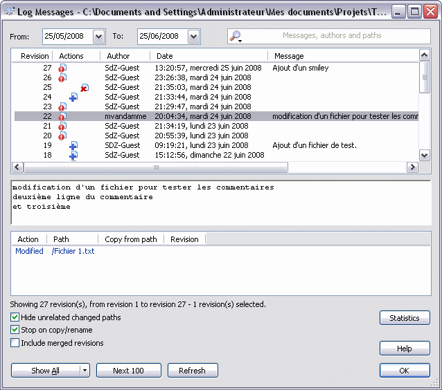
Cette fenêtre, amis zéros, est une véritable mine d'informations.
Regardons d'abord les boutons. On voit que l'on peut sélectionner les
dates de départ et de fin pour l'affichage des logs (comme pour
-r {DATE} en fait), mais aussi que l'on peut tout afficher (
Show All), ou seulement les 100 logs suivants, ou encore uniquement un ensemble de révisions (
Show Range..., appuyez sur la petite flèche à droite de
Show All),
et que l'on peut enfin rafraîchir la fenêtre. Notons la barre de
recherche en haut à droite, très bien faite : elle permet d'effectuer
une recherche sur le champ de votre choix (cliquez sur la loupe pour
voir) et accepte les expressions régulières.
Enfin, le bouton
help donne accès à l'aide de TortoiseSVN pour le log (cette aide est
EXTRÊMEMENT bien faite, n'hésitez pas à la consulter) et le bouton
Statistics vous affichera des graphiques sur le nombre de
commit par login et par date.
On voit aussi trois "check boxes", tout ce que vous avez besoin de savoir est que
stop on copy/rename
ne va afficher les logs de l'élément demandé que jusqu'à ce qu'il ait
été copié ou renommé (mais ne va pas chercher les logs du fichier copié
ou avant qu'il ait été renommé).
Maintenant passons au plus important. Les trois champs centraux :
- le premier affiche un résumé de tous les logs demandés ;
- le deuxième affiche le commentaire de la version sélectionnée dans le premier champ ;
- le troisième affiche les actions qui ont eu lieu lors de la version sélectionnée dans le premier champ.
Pas grand-chose à dire sur le deuxième et le troisième champ. En
revanche, le premier champ offre un résumé assez complet et disponible
en un rapide coup d'oeil. Analysons colonne par colonne.
- La première colonne donne le numéro de la version.
- La deuxième donne un aperçu des actions qui ont eu lieu.
Un fichier avec un '!' signifie qu'un fichier (au moins) a été modifié.
Un fichier avec un '+' signifie qu'un fichier (au moins) a été ajouté.
Un fichier avec un 'x' signifie qu'un fichier (au moins) a été supprimé.
En réalité, il y a une quatrième icône mais on ne va pas la voir maintenant. Si vous êtes curieux la doc est par là. ==>
- La troisième donne l'auteur du commit.
- La quatrième donne la date du commit.
- La cinquième enfin donne le commentaire du commit (mais sans afficher les retours chariot).
Vous voyez bien qu'avec ce premier tableau, vous obtenez déjà un très bon résumé des changements ayant eu lieu lors du
commit.
Et voilà : avec ces commandes, rien ne peut plus vous échapper (ou
presque) sur le SVN. N'oubliez pas que consulter régulièrement les logs
ainsi que les autres informations permet de bien se tenir à jour, mais
surtout d'éviter au maximum les conflits.
Prochain chapitre : "Gérer les conflits".
Gérer les conflits
Dans ce chapitre, nous allons enfin apprendre à résoudre la chose la plus horrible... les conflits !
Comme nous l'avons déjà vu (mais un petit rappel ne fait jamais de mal),
un conflit apparaît lorsque deux personnes (ou plus) décident de
modifier un fichier au même moment. La plus rapide va
commiter
son changement sans aucun problème, mais la deuxième va devoir gérer le
fait que, sur le serveur, se trouve une version plus récente que celle
sur laquelle elle a travaillé.
Pour vous entraîner à gérer les conflits, il faut d'abord les créer. Pour en créer un, aucun problème, il suffit de faire un update du fichier voulu à une version antérieure, de modifier le fichier et de le commiter. Le serveur ne sera pas content puisque la version sur laquelle vous avez travaillé n'est pas la plus récente au moment du commit.
Pour éviter, lorsque vous travaillez sur les
conflits, qu'il se passe des choses incompréhensibles parce que vous
êtes cinq à tester les conflits sur le même fichier, créez un dossier,
créez un fichier dans ce même dossier et remplissez-le ; faites un
Code : Console - Sélectionner, puis un deuxième avec un autre ajout de contenu,
updatez à la première version du fichier (seulement la moitié du contenu) et entraînez-vous comme ça.
Contourner le conflit
Maintenant que tout le monde se rappelle comment créer un conflit, je
vous propose de mettre en place votre environnement et d'en créer un.
Alors, quelles sont les options qui viennent à nous pour contourner le
problème (le résoudre nous-mêmes ou le laisser à quelqu'un d'autre
) !? Trois commandes, en fait :
- diff ;
- revert ;
- resolved.
diff
Cette commande va vous permettre de ne pas vous perdre. Vous codez plus
vite que votre ombre ? Vous ne savez plus ce que vous avez modifié
depuis le dernier
update ? Pas de problème,
svn diff est là pour vous expliquer ce que vous avez fait.
Code : Console - Sélectionner | svn diff [Target[@Rev]...] [-N] [-r Rev1:Rev2] [--force] [--summarize] [--no-diff-deleted] \
[--username login] [--password mdp] [--no-auth-cache] |
- @Rev correspond à la révision de
référence que vous voulez prendre. Il montrera les différences entre les
versions du fichier en montrant ce qui a été ajouté ou supprimé par
rapport à cette référence.
- -N pour non récursif (uniquement ce dossier).
- --force pour forcer la commande à s'exécuter.
- --sumarize pour qu'il n'affiche qu'un résumé.
- --no-diff-deleted pour qu'il n'affiche pas les différences pour les fichiers ayant été supprimés.
Bon, je vous ai montré la commande entière pour que vous sachiez
l'utiliser, mais ce dont vous avez besoin pour voir les différences que
vous avez apportées par rapport à votre dernier
update, c'est juste :
Code : Console - Sélectionner
Et c'est tout.
À mon grand regret, je n'ai pas trouvé d'équivalent de la commande ""
pour TortoiseSVN. Mais rassurez-vous, TortoiseSVN possède un outil bien
plus puissant pour comparer deux versions d'un fichier, ou bien deux
fichiers différents pour les fusionner dans un troisième. Ce sera vu en
prochaine sous-partie.
revert
Cette commande va enlever la plupart des modifications effectuées sur les éléments (fichiers ou dossiers) depuis le dernier
update.
Euh... ça veut dire quoi, "la plupart" ? Il ne va pas tout remettre ? C'est au petit bonheur la chance ?
Pas du tout ! Mais si vous regardez le manuel (si, si, le manuel), vous
verrez que cette option ne permet pas de restaurer des dossiers
supprimés. Sinon, c'est du tout cuit.
On voit d'ici le problème de cette commande.
Toutes vos modifications vont partir à la poubelle et vous allez gagner
le droit de les refaire sur le nouveau fichier après un update.
Eh oui, la vie est dure, mais c'est comme ça. Dans un projet, la plupart
du temps, cette commande est utilisée parce que quelqu'un a édité un
fichier binaire, ".doc" par exemple, alors que ce n'était pas son tour
dans le planning. Or le problème, c'est que SVN ne sait pas fusionner
des fichiers binaires ! Dommage... il va donc falloir tout refaire.
La commande s'utilise comme suit (très peu d'options) :
Code : Console - Sélectionner | svn revert [CHEMIN] [--targets Fichier_darguments] [-R] |
resolved
Cette commande a "deux fonctions". Elle ne permet que d'indiquer qu'un
conflit est résolu (comme on aurait pu s'en douter), seulement,
subtilité, il y a deux façons de s'en servir.
Méthode 1
J'ai un conflit, je
me casse la tête et le résous, j'indique qu'il est résolu, je
commite.
Méthode 2
J'ai un problème, je ne m'en occupe pas parce que je n'ai pas envie de
refaire ce que j'ai fait et que c'était mon tour dans le planning,
j'indique qu'il est résolu (même si ce n'est pas le cas), je
commite.
Pour la méthode 1, nous allons voir comment fusionner le travail, en cas
de conflit, dans la prochaine sous-partie. Pour la méthode 2, vous
l'aurez compris, elle permet de ne pas avoir à tout refaire soi-même ;
en revanche, elle donne tout à refaire à l'autre membre de l'équipe qui a
commité avant vous.
Voici son utilisation (à nouveau très peu d'options) :
Code : Console - Sélectionner | svn resolved [CHEMIN] [--targets Fichier_darguments] [-R] |
Et TortoiseSVN
Eh bien, à nouveau, pas besoin de se casser la tête.
Clic droit >>
TortoiseSVN >>
Revert
Clic droit >>
TortoiseSVN >>
Resolved
TortoiseSVN est très bien fait, il n'affiche
pas les actions qu'il est impossible d'effectuer. Ainsi, s'il n'y a rien
à résoudre (ni à revert) sur le fichier ou dossier cliqué, il ne vous proposera pas la commande !
Fusionner le conflit
Ici, nous allons apprendre à résoudre le conflit de la manière la plus subtile : la fusion des versions en conflit.
Pourquoi est-ce que l'on ne fait pas toujours comme ça ?
Eh bien tout simplement parce que ce n'est pas toujours possible. Comme
dit précédemment, il n'est pas possible d'user de cette méthode pour
tout conflit. Elle ne fonctionnera pas avec les fichiers binaires par
exemple. En revanche, elle fonctionne très bien avec les fichiers texte.
Je vais dans cette partie détailler la marche que j'ai suivie. Ça vous
permettra d'utiliser la même pour mieux comprendre, et de vous servir un
peu aussi votre esprit d'analyse.
Commençons par la création du conflit :
Code : Console - Sélectionner | >>> svn update -r 62 Fichier\ 1.txt
U Fichier 1.txt
Updated to revision 62.
>>> vim Fichier\ 1.txt
>>> svn ci -m "commit d'un conflit"
Sending Fichier 1.txt
svn: Commit failed (details follow):
svn: Your file or directory 'Fichier 1.txt' is probably out-of-date
svn: The version resource does not correspond to the resource within the transaction. Either the requested version resource is out of date (needs to be updated), or the requested version resource is newer than the transaction root (restart the commit).
>>> ls
Dossier 1 monajout.cpp testFile
Fichier 1 - Copie.txt test youpi2.txt
Fichier 1.txt test123.txt
argInfo test2
>>> svn status -u Fichier\ 1.txt
M * 62 Fichier 1.txt
Status against revision: 76 |
Et voilà, ce gentil petit message d'erreur nous explique que, contre
toute attente, la version sur laquelle nous nous sommes basés pour faire
nos changements n'est pas à jour par rapport au serveur (ce n'est pas
la plus récente). Il va donc falloir corriger le tir.
Résolution manuelle
Regardons, au hasard, ce qui se passe si l'on tente un
update
sur ce fichier (non à jour mais modifié localement).
Code : Console - Sélectionner | >>> svn update Fichier\ 1.txt
C Fichier 1.txt
Updated to revision 76. |
Notez le
C en première colonne qui nous indique que le fichier est
Conflicted (en conflit). Mais regardons un peu plus loin.
Code : Console - Sélectionner | >>> ls
Dossier 1 Fichier 1.txt.r76 test2
Fichier 1 - Copie.txt argInfo testFile
Fichier 1.txt monajout.cpp youpi2.txt
Fichier 1.txt.mine test
Fichier 1.txt.r62 test123.txt |
On constate que l'
update nous a rajouté tout un tas de nouveaux "Fichier 1.txt". Parmi ces nouveaux, on trouve :
- "Fichier 1.txt", le vrai, celui sous contrôle de version, celui en
conflit (tous les autres ne sont pas considérés comme étant sous
contrôle de version, vous pourrez vous en persuader avec les icônes,
ceux qui en ont et avec un svn ls pour les autres) ;
- "Fichier 1.txt.mine", le mien, celui que j'ai modifié ;
- "Fichier 1.txt.r62", le fichier 1.txt de la révision 62 (celle sur laquelle j'ai travaillé) ;
- "Fichier 1.txt.r76", celui de la révision 76, la dernière révision en date lors du commit.
Un petit coup d'oeil sur ce fameux Fichier 1.txt qui est sous contrôle de version : qu'en a fait le
update ?
Code : Console - Sélectionner | >>> svn status -uv Fichier\ 1.txt
C 76 76 SdZ-Guest Fichier 1.txt
Status against revision: 76
>>> Cat Fichier\ 1.txt
[... Début du Fichier ...]
Et je fous la merde
Merci
<<<<<<< .mine
OM en force !
Création d'un conflit
=======
OM en force !
Barça en berne lol
>>>>>>> .r76 |
On voit que les deux modifications sont présentes dans ce fichier. À la fois les miennes, mais aussi celles faites par le
commit de la révision 76. Il est assez simple de comprendre comment les différences sont séparées :
- tout ce qui est entre "<<<<<<< .mine" et "=======" sont mes modifications ;
- tout ce qui se trouve entre "=======" et ">>>>>>> .r76" sont les modifications qui ont été commitées lors de la révision 76.
À partir de là, on garde ce que l'on veut, on remet dans l'ordre, on déclare le conflit comme
resolved (résolu) pour autoriser le
commit et on
commite.
Code : Console - Sélectionner | >>> vim Fichier\ 1.txt
>>> svn resolved Fichier\ 1.txt
Resolved conflicted state of 'Fichier 1.txt'
>>> svn ci Fichier\ 1.txt -m "resolution du conflit"
Sending Fichier 1.txt
Transmitting file data .
Committed revision 77. |
Oui, mais ça m'a l'air très manuel cette méthode.... Il n'y a pas plus subtil ?
Eh bien, oui et non. Pour la plupart des modifications effectuées, SVN
ne peut se permettre de choisir pour vous, si deux personnes ont édité
la même ligne (le même endroit dirons-nous plutôt), quelles
modifications arrivent en premier ?
Résolution automatique
En revanche il sait très bien faire le
merge (la fusion) tout seul si vous n'avez pas édité les mêmes parties d'un document.
Petit exemple.
Je prends le fichier monaj.cpp que je trouve sur le SVN au moment de la rédaction.
Citation : monaj.cppje rajoute un fichier
et je le modifie en plus
... tant pis
un ligne après
hop
J'
update sur deux
working copies
(copies de travail) et j'édite sur les deux le fichier. Pour le
premier, je rajoute "hop" au début du fichier (en rajoutant une ligne),
pour le deuxième, je rajoute "hop" à la fin du fichier (sans rajouter de
ligne).
Je
commite avec l'un puis avec l'autre.
Le deuxième
commit me donne une erreur, donc j'
update.
Code : Console - Sélectionner | >>> svn up monaj.cpp
G monaj.cpp
Updated to revision 90.
>>> ls
Dossier 1 monaj.cpp testFile
Fichier 1 - Copie.txt test123.txt youpi2.txt
Fichier 1.txt test2
argInfo test3
>>> cat monaj.cpp
hop
je rajoute un fichier
et je le modifie en plus
... tant pis
un ligne après
hop hop |
On voit que le fichier n'est pas
C pour indiquer un conflit, mais
G
pour indiquer une fusion automatique. Et on constate qu'en effet, aucun
fichier .mine, .r89, .r90 n'a été créé (comme lors d'un conflit), et
que le fichier monaj.cpp a bien intégré les deux modifications faites.
Et TortoiseSVN
Utilisateurs de Windows et de TortoiseSVN, regardez bien. Qu'a-t-on fait lors de cette sous-partie ? Uniquement des
update et des
commit. Mais vous savez déjà faire tout ça. Donc, vous savez tout faire.
Quand je vous disais que l'apprentissage d'un client n'était pas
compliqué, ce n'était pas pour rien ! Il faut juste la théorie et hop !
c'est parti.
Information tout de même : pour faire un update vers une révision précédente avec TortoiseSVN, il faut faire :
Clic droit >> TortoiseSVN >> update to revision...
Pourtant, TortoiseSVN propose quand même un GROS plus : TortoiseMerge !
Eh oui, la résolution manuelle d'un conflit est quelque peu lourde :
repérer les différences entre deux fichiers et tout et tout. TortoiseSVN
a mis au point un outil pour le moins performant qu'est TortoiseMerge.
Vous pouvez récupérer sa documentation
par ici.
Une annexe aura très certainement lieu pour apprendre à s'en servir
correctement. En attendant, il faudra vous contenter de la doc.
Éviter le conflit
Maintenant que l'on a vu comment le résoudre, on va voir comment l'éviter.
Ce que l'on a déjà vu
Eh oui, tout au long du tutoriel, j'ai essayé de vous sensibiliser le plus possible aux
"best practices" (les bonnes pratiques) du SVN à mettre en oeuvre pour éviter d'avoir des conflits. Petit récapitulatif :
- essayez de travailler le plus possible avec des fichiers texte et le moins possible avec des fichiers binaires ;
- faites des update le plus souvent et régulièrement possible, et obligatoirement avant de commencer à travailler sur un fichier ;
- faites des commit réguliers, dès
que vous avez fini de travailler sur un fichier (pas deux heures après),
et si le travail prend du temps, un petit commit intermédiaire ne fait pas de mal et sauvegarde votre travail ;
- ayez un planning pour savoir à tout instant qui peut travailler quand sur les fichiers binaires ;
- consultez régulièrement les logs et autres informations pour ne pas faire du travail pour rien.
Il est fortement conseillé d'appliquer ces bonnes pratiques !
lock et unlock
Il existe également deux commandes qui sont là rien que pour vous, exprès pour éviter les conflits. Il s'agit de
lock (verrouiller) et
unlock (déverrouiller).
Ces deux commandes ont un comportement très simple.
lock va bloquer l'édition du fichier aux autres membres jusqu'à ce que vous fassiez un
unlock.
Si l'on va voir l'icône associé sous TortoiseSVN, on trouve celle-ci :
Nous avons donc un très joli petit cadenas qui nous montre que le fichier possède un
lock.
Lors de votre commit
sur l'élément verrouillé, il va vous être proposé de relâcher le
verrou. C'est d'ailleurs le comportement par défaut. Donc si vous ne
voulez pas libérer le verrou, il faut le préciser.
Regardons ce que cela donne pour l'utilisation sous TortoiseSVN et en
ligne de commande. Pour TortoiseSVN, toujours aussi simple : clic droit
>>
TortoiseSVN >>
Get lock... et clic droit >>
TortoiseSVN >>
Release lock.
Pour la ligne de commande :
Code : Console - Sélectionner | svn lock TARGET... [--target fichier_darguments] [-m "message"] [--force] [--force-log] [--username login] [--password mdp] [--no-auth-cache] |
et
Code : Console - Sélectionner | svn unlock TARGET... [--target fichier_darguments] [--force] [--username login] [--password mdp] [--no-auth-cache] |
Alors, dans ces multiples options, vous en retrouvez quelques-unes que
vous connaissez déjà, on notera d'ailleurs la possibilité de mettre un
message de
log sur le
lock pour le justifier, mais également quelques nouvelles options :
- --no-auth-cache permet de ne pas
stocker les informations d'accès au serveur (login & mdp) dans le
cache. À utiliser si vous êtes sur l'ordinateur d'un autre par exemple ;
- --force-log va, comme son nom l'indique encore une fois, forcer la validité de votre message de log ;
- --force, lui, force l'exécution
de la commande, même si quelqu'un d'autre avait, par exemple, déjà mis
un verrou sur l'élément concerné.
--force ne
devrait pas être utilisée. Cette option sert si vraiment quelqu'un dans
le groupe a fait une connerie, a verrouillé quelque chose qu'il
n'aurait pas dû ou bien l'a fait à un moment où il n'aurait pas dû.
Maintenant, vous l'aurez compris, la chose simple à faire pour éviter
les conflits est de, lorsqu'on va travailler sur un fichier, le
locker, verrouiller, pour être sûr qu'il n'y ait pas de conflit.
NON ! C'est une énorme erreur. Le lock se doit d'être utilisé avec parcimonie. Tout le but du merge automatique est de permettre à plusieurs personnes de travailler en même temps sur le même fichier. Si vous faites un lock à chaque fois, il y a une perte de productivité.
Le
lock montre son utilité lors d'un
travail sur un fichier binaire, car, je le rappelle une vingtième fois,
on ne sait pas fusionner les fichiers binaires. Mais en dehors de ce
cas-là, il n'est et ne devrait presque jamais être utilisé.
Vous venez de voir plusieurs méthodes pour résoudre des conflits. Le
tout est maintenant de les maîtriser parce que vous aller forcément
faire face à des conflits dans vos projets.
Vous venez de voir
les bases pour l'utilisation de Subversion.
Cette partie n'est pas encore complète ! Il reste encore à venir :
N'oubliez pas non plus que tout est une affaire d'habitudes : si vous êtes habitués à faire des
update et
commit réguliers, vous devriez grandement minimiser les risques de conflit.
Partie 2 : Annexes
C'est ici que l'on va voir tous les petits trucs qui ne sont pas indispensables, mais tellement bons à savoir.
Créer son espace sur assembla
Ce chapitre sera assez rapide ! Il est là pour vous expliquer comment créer votre espace SVN à l'aide du site
www.assembla.com.
Le but n'est pas de faire de la pub pour ce site, mais surtout de vous
permettre d'utiliser assembla pour vos futurs projets, histoire que ce
que je vous ai appris serve à quelque chose.
Bref, nous allons partir de l'inscription sur le site jusqu'à la création de son espace et l'invitation d'autre membres.
assembla vient de faire une grosse mise à
jour de ses services. Malheureusement, il en a également profité pour
rendre les espaces privés payants. Ainsi, si vous voulez continuer à
utiliser leurs services gratuitement, il va falloir les rendre
accessibles au public. Avec ces mises à jour, il est possible que les
screenshots de ce tutoriel ne soient plus tout à fait corrects, ne vous
inquiétez donc pas si vous n'obtenez pas tout à fait les mêmes pages. Je
mettrai à jour dès que possible.
Citation : Mail assemblaNew subscription plans
We will no longer offer free, private spaces. If you own a free, private
space, we will send you an upgrade message in a few days asking you to
buy a "Private / Professional" subscription, or convert the space to
public permissions. You can make a migration decision here.
Pourquoi utiliser assembla
Comme je vous l'ai dit, assembla permet de créer des
repositories. Il permet en fait de faire bien plus de choses.
Le titre de la page de démarrage d'assembla est :
"Accelerating software development".
C'est-à-dire : accélérer le développement de logiciels. Les outils
proposés ici sont donc prévus pour aider le développement de logiciels
pour les personnes utilisant les méthodes agiles. De fait, on trouve
donc beaucoup d'outils en plus de Subversion.
Les méthodes agiles
Regardons sur Wikipedia :
http://fr.wikipedia.org/wiki/Méthode_agile.
Citation : WikipediaLa
notion de méthode agile se limite actuellement aux méthodes ciblant le
développement d'une application informatique. Ces méthodes agiles
permettent de concevoir des logiciels en impliquant au maximum le
demandeur (client), ce qui permet une grande réactivité à ses demandes.
Les méthodes agiles se veulent plus pragmatiques que les méthodes
traditionnelles. Elles visent la satisfaction réelle du besoin du
client, et non d'un contrat établi préalablement. La notion de méthode
agile est née à travers un Manifeste Agile signé par 17 personnalités.
Certes, ce passage n'est pas très compréhensible, mais il résume très
bien. Les méthodes agiles sont fondées autour de valeurs. Ces valeurs
sont :
- les personnes ;
- le logiciel ;
- la collaboration ;
- l'acceptation du changement.
Les équipes sont souvent de petites équipes très soudées appliquant l'une des méthodes agiles (XP, scrum, DSDM, FDD, etc.).
Chacune de ces méthodes possède ses particularités, mais toutes
répondent aux valeurs précédemment citées. Le but de ces méthodes est
d'avoir une petite équipe et énormément de communication.
La communication est la base de tout ! Elle permet entre autres le
transfert des connaissances, mais pas seulement. Il y a énormément de
communication avec le client (collaboration). Lors de l'application de
méthodes agiles, le client ne passe pas de contrat demandant un logiciel
répondant à un cahier des charges précis. Le client demande une
application et suit l'évolution du projet. Il fait partie du projet. En
même temps qu'il le suit, il peut modifier ses souhaits à tout moment
(ajouter ou enlever certaines choses).
On retrouve les quatre valeurs dans cette description. Les personnes
doivent être soudées et communiquer énormément entre elles. Le logiciel
doit fonctionner, c'est la première priorité avant la documentation
(mieux vaut un logiciel qui marche sans documentation qu'une
documentation documentant un logiciel ne marchant pas). Bien sûr, il en
faut un minimum. Ce minimum est fait, le reste se trouve dans les
commentaires du code
(on retrouve encore une fois l'importance des commentaires) et dans le
transfert des compétences et connaissances au sein de l'équipe. De plus,
comme le client fait partie du projet, il va également suivre son
évolution et acquérir cette compétence pour manipuler le logiciel.
Enfin, comme le contrat ne consiste pas à fournir un logiciel répondant à
un cahier des charges, on trouve également un support aux utilisateurs
par l'équipe de développement.
L'objectif est de fournir quelque chose de fonctionnel, même s'il n'est
pas fini. Cette méthode permet aux utilisateurs de commencer à utiliser
l'application et à émettre des commentaires à son sujet. Ces
commentaires faits par les utilisateurs du produit vont donner des idées
d'améliorations, ces améliorations vont être demandées en plus à
l'équipe de développement (d'où la nécessité d'acceptation du changement
! Il faut que les développeurs puissent ajouter des
features dans le logiciel lorsqu'elles sont demandées).
Voici enfin une liste des principes des méthodes agiles que l'on peut
trouver sur Wikipedia (à nouveau) et qui, je trouve, est très explicite :
Citation : WikipediaCes 4 valeurs se déclinent en 12 principes généraux communs à toutes les méthodes agiles.
- « Notre première priorité est de satisfaire le client en livrant tôt et régulièrement des logiciels utiles. »
- « Le changement est bienvenu, même tardivement dans le
développement. Les processus agiles exploitent le changement comme
avantage compétitif pour le client. »
- « Livrer fréquemment une application fonctionnelle, toutes les deux
semaines à deux mois, avec une tendance pour la période la plus courte. »
- « Les gens de l'art et les développeurs doivent collaborer quotidiennement au projet. »
- « Bâtissez le projet autour de personnes motivées. Donnez-leur
l'environnement et le soutien dont elles ont besoin, et croyez en leur
capacité à faire le travail. »
- « La méthode la plus efficace pour transmettre l'information est une conversation en face à face. »
- « Un logiciel fonctionnel est la meilleure unité de mesure de la progression du projet. »
- « Les processus agiles promeuvent un rythme de développement
soutenable. Commanditaires, développeurs et utilisateurs devraient
pouvoir maintenir le rythme indéfiniment. »
- « Une attention continue à l'excellence technique et à la qualité de la conception améliore l'agilité. »
- « La simplicité - l'art de maximiser la quantité de travail à ne pas faire - est essentielle. »
- « Les meilleures architectures, spécifications et conceptions sont issues d'équipes qui s'auto-organisent. »
- « À intervalle régulier, l'équipe réfléchit aux moyens de devenir
plus efficace, puis accorde et ajuste son comportement dans ce sens. »
Maintenant que vous voyez ce que sont les méthodes agiles, vous
comprenez ce qu'assembla peut proposer comme services pour les
développeurs. La majorité des outils (sinon tous) permettent d'améliorer
la communication. Je parlerai rapidement de quelques autres outils que
l'on trouve à la fin du tuto.
Je vais vous demander de respecter un peu ce site. De son côté, il
propose un espace (limité) gratuitement pour que vous puissiez faire
quelques projets (ou quelques tests), alors de votre côté, vous n'êtes
pas obligés d'ouvrir des espaces sur votre compte à tout va et pour
n'importe quoi.
Cet espace n'est pas non plus un serveur FTP à utiliser pour transférer
vos fichiers ou pour posséder votre petit espace de stockage personnel
sur le Net.
Je vous demande donc de ne pas ouvrir des espaces pour rien et de fermer vos espaces une fois que vous aurez fini votre projet.
Registration & space creation
Avant de pouvoir aller plus loin, il faut déjà s'incrire sur le site.
Allez donc sur
www.assembla.com puis cliquez sur

L'inscription ne vous demande pas grand-chose :
- un login ;
- un mot de passe ;
- une adresse e-mail.
Vous voyez qu'il y a plusieurs informations optionnelles. Comme le nom
l'indique, elles sont optionnelles, mais ce sont des informations que
les autres membres de votre future équipe pourront voir sur vous. Il
peut donc être utile de les renseigner.
Une fois la procédure d'inscription passée et confirmée, vous pouvez vous connecter pour entrer sur votre compte.
Lorsque vous vous connectez, si vous n'avez pas reçu le mail de
confirmation, cliquez sur le lien pour qu'il vous le renvoie afin de
confirmer votre inscription.
Une fois cette procédure terminée, vous devriez tomber sur une page ressemblant à celle-ci :
J'ai déjà pas mal de projets créés, donc ma liste n'est pas vide. La vôtre devrait être vide !
Pour créer un espace pour un nouveau projet, allez sur l'onglet
Spaces. Dans cet onglet vous trouverez tous vos projets en cours et un bouton pour en créer un nouveau.
Cliquez donc sur le bouton !
Onglet Name and Description
Nous arrivons sur la fenêtre de création d'un espace dans laquelle on
demande le nom du "space" (de l'espace qui va contenir le projet) et un
nom pour l'URL. Renseignez les deux champs et vérifiez la disponibilité
de l'URL. Une fois ces champs remplis, on vous demande aussi quel genre
de projet vous allez mener (pour inclure directement certains outils).
Ne cochez rien pour l'instant ! Vous les ajouterez plus tard un par un.
Vous pouvez aussi donner une description ainsi que des tags en bas de la page.
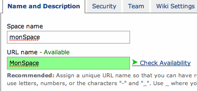
Onglet Security
Pour la sécurité, trois options principales :
- non-member access permet de dire quels seront les droits des "non-membres" de ce projet. Aucun, lecture seule ou lecture / écriture ;
- member access : idem, mais pour les membres de l'équipe cette fois ;
- email to flows est une option pour envoyer des mails à l'ensemble de l'équipe. Il s'agit ici de décider qui aura les droits pour le faire.
Onglet Team
Dans cette boîte de dialogue, vous pouvez inscrire les noms d'autres
membres assembla pour les inviter à rejoindre votre projet. Vous pouvez
aussi inscrire les e-mails des membres si vous ne connaissez pas leur
login sur assembla. Si l'adresse mail est reliée à un compte assembla,
l'invitation sera envoyée directement sur le compte assembla. Sinon, une
invitation à la création d'un compte assembla sera envoyé par e-mail à
la personne en même temps que l'invitation pour rejoindre le projet.
Onglets Wiki Settings et Appearance
Le premier traite du wiki offert avec l'espace, cela ne nous intéresse
donc pas. Je peux quand même vous conseiller (si vous comptez utiliser
le wiki) de changer le
Wiki markup format de
WYSIWYG à
Text. L'explication sera donnée plus tard.
Le deuxième traite de l'apparence du site, ça ne nous intéresse donc pas plus pour le SVN.
Dans l'onglet
Appearance, cliquez sur le bouton
Create et votre espace est (enfin) créé.
Vous devriez arriver sur une page comme celle-ci :
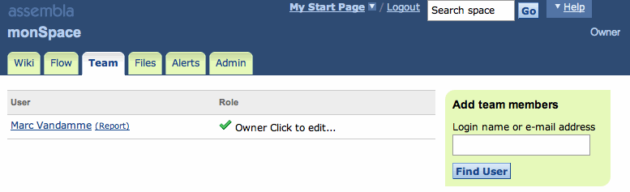
Administration de son espace
Maintenant que l'espace est créé, il faut ajouter les outils que l'on veut utiliser dessus.
Onglet Admin
Allez dans l'onglet
Admin puis dans le sous-onglet
Tools.
Une (très) grande liste d'outils est proposée avec le prix affiché
(gratuit pour tous ceux que vous pouvez voir, normalement) à côté.
Si vous regardez tout ce qu'il y a, on peut entre autres trouver les
Milestones, les
Time Tickets, le
scrum qui sont des outils utilisés par les équipes agiles. L'option qui nous intéresse est Subversion.
Si comme pour moi, lorsque vous cliquez sur Add pour Subversion il ne l'ajoute pas, alors cliquez sur Add pour Trac/SVN.
Vous devriez donc voir apparaître un nouvel onglet s'appelant
Trac/SVN :

Informations sur le SVN
Dans cet onglet vous trouverez beaucoup d'informations, mais peu sont réellement utiles.
Déjà, si vous avez aussi Trac, toute la colonne de droite ne nous
intéresse pas puisqu'elle lui est réservée. Dans la colonne de gauche,
si l'on regarde au milieu de tout le blabla, on trouve l'URL du
repository, celle qu'il faut entrer pour faire un
checkout
la première fois. Mais ce n'est pas tout : on trouve aussi un lien pour
parcourir les fichiers du serveur SVN "plus joliment" qu'en tapant
juste l'URL du repository dans la barre d'adresse de son navigateur
(vous pouvez essayer pour voir).
Enfin on trouve aussi un lien pour importer et / ou exporter le SVN. Si
vous essayez l'exportation, vous verrez que le fichier obtenu contient
toutes les informations (versions des fichiers, contenus, commentaires
lors des
commit, etc.) sur les
fichiers et dossiers présents sur le SVN. Et c'est ce genre de fichier
qu'il est possible d'importer pour créer un nouvel espace à partir du
fichier d'un ancien espace.
Onglet Alerts
Si vous créez un espace et que vous ne faites rien, vous allez avoir une
drôle de surprise quand il va commencer à y avoir du trafic sur le
projet. En effet, à chaque modification, un mail vous sera envoyé (c'est
valable aussi pour tous les membres de l'équipe). Il faut donc régler
ces paramètres pour les adapter à vos besoins.
Pour cela, il faut aller dans l'onglet
Alerts :
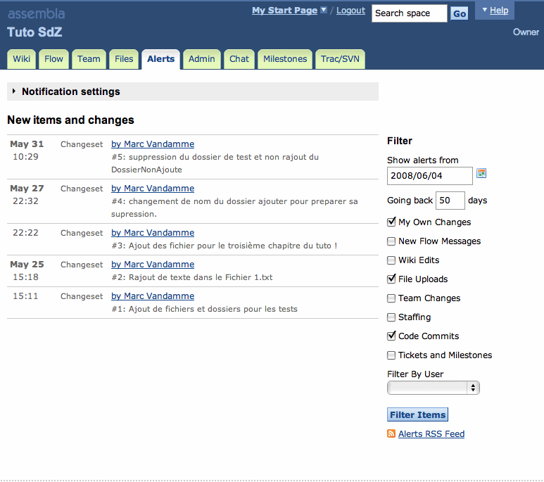
Décortiquons ce que nous voyons sur cette page :
- un bouton pour afficher les options d'alertes ;
- les changements du projet ;
- les filtres d'affichage pour les changements du projet.
Les changements du projet
Les changements du projet sont toutes les dernières actions qui ont été
faites. On peut voir à droite les options de filtre que l'on peut cocher
pour n'afficher qu'une sélection d'événements.
Dans mon cas ne s'affichent que "mes actions", "les uploads de fichier" ainsi que "les commits effectués" sur le SVN.
On voit aussi que l'on peut mettre un filtre par membre avec la combobox juste en dessous du
Filter By User :.
Il est possible de choisir une date limite d'affichage des
notifications (toutes les notifications dont la date de création /
modification est supérieure ne seront pas affichées) ainsi que le nombre
de jours que l'on veut qu'
ils reviennent en arrière.
Enfin, petit luxe, on peut opter pour un flux RSS afin de pouvoir
consulter les modifications depuis un lecteur de flux comme les modules
iGoogle, Netvibes ou autres.
Bref, avec tout ça, vous pouvez trier vos informations sur toutes les modifications qu'aura subies le projet, par qui et quand.
On voit dans mes notifications que j'ai déjà pu faire cinq
commit au moment où j'ai pris le screenshot. En plus de savoir que j'ai fait un
commit,
on voit le commentaire que j'ai laissé et la date. Je reviens donc sur
l'importance de faire des commentaires lorsqu'on fait un
commit.
En clair, cette page permet d'avoir un très bon aperçu de l'état du projet.
Les options d'alertes
Si l'on clique sur
Notification settings, on a tout un tas de nouvelles options qui apparaissent :
Dans cette boîte, on voit donc que j'obtiens un résumé journalier de toutes les actions que j'ai choisies.
Par défaut, un mail est envoyé à chaque
modification. Donc, 20 commit dans la journée = 20 mails ! Pensez donc à
changer ces options de notifications.
Il est possible de choisir entre un mail par changement, un résumé par
heure (s'il s'est passé quelque chose), un résumé par jour (idem) ou
jamais.
Et tout le reste...
Nous allons faire un rapide tour des autres onglets (outils) que l'on peut trouver sur la page.
Alors, sauf si vous avez pris plein d'options en plus, vous devriez avoir comme onglets :
- Wiki ;
- Flow ;
- Files ;
- Chat ;
- Milestones.
Si vous ajoutez une option dans le sous-onglet Tools de l'onglet Admin,
vous aurez sûrement droit à un autre onglet. Pour ma part je vais me
contenter de présenter ceux de base, c'est-à-dire ceux que je viens de
citer.
Onglet Wiki
Ici, vous pouvez créer des pages que tout le monde pourra consulter et modifier très rapidement... comme un wiki.
Le nombre de pages n'est pas limité, mais n'oubliez pas que votre espace reste, lui, limité à 500 Mo toutes données confondues.
Il est donc possible de créer des pages et d'écrire ce que l'on veut
dedans (si, si, je vous jure), modifier les pages créées et afficher les
différences entre deux versions d'une page.
Add a New Page : permet de créer une nouvelle page. On peut choisir qu'elle apparaisse ou non directement dans la liste
wiki Pages (sinon il faudra cliquer sur
all pages pour y accéder).
Edit this page : pour éditer la page affichée.
View Page History : pour accéder et montrer les différences entre deux versions de la page (voir ce qui a été ajouté ou supprimé).
Print this page : imprimer la page.
Delete this page : supprimer la page.
Lorsqu'on édite une page, on a le choix dans le format d'édition et de vision :
Text,
TextFile,
Markdown ainsi que
WYSIWYG (What You See Is What You Get, soit "Ce que vous voyez est ce que vous obtenez").
Lorsqu'on édite une page, l'édition ne fonctionne pas en WYSIWYG, il faut donc déjà enregistrer la page pour la passer en vision mode Text (ou autre) et ensuite éditer le wiki ! Pour que le format par défaut des pages créées soit Text, il faut aller dans l'onglet Admin, puis dans le sous-onglet Wiki-Settings.
Onglet Flow
Dans cette partie, vous pouvez créer des messages qui pourront également être envoyés par mail à tous les
teammates (autres membres de l'équipe).
Ces messages ont pour vertu d'être courts afin d'expliquer rapidement quelque chose à faire, fait, oublié, etc.
Il est possible d'assigner une priorité ainsi qu'une pièce jointe au
message ; de même, il est possible d'assigner le message à quelqu'un
(pour lui donner une tâche par exemple). À partir du message, il est
possible de répondre pour continuer une discussion.
Enfin, sur le bandeau de droite, on voit qu'il est possible de trier les
messages pour voir seulement le premier message des discussions, les
messages les plus récents, les prioritaires ou bien les discussions
terminées. Une case à cocher permet de montrer seulement les titres des
messages ou bien tout le message.
Enfin, on note la possibilité d'utiliser un flux RSS.
Onglet Files
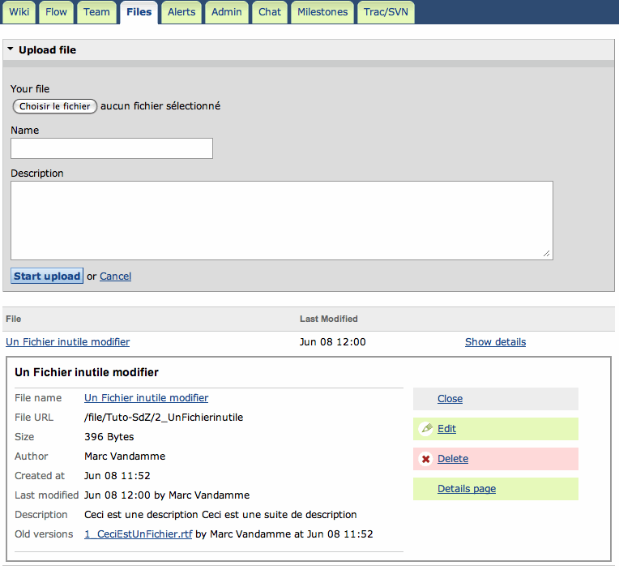
C'est ici que l'on
uploade les fichiers que l'on veut partager. Lorsqu'un
upload est fait, on demande un nom et une description du fichier (pour l'affichage sur la page).
N'importe qui peut ensuite le télécharger et le modifier. Une fois modifié localement, il est possible de faire un
Edit dans
show details.
Lors de l'édition, il est possible de changer le nom du fichier,
changer sa description et changer le fichier. Le fichier sera alors
remplacé (mais l'ancien sera toujours accessible dans
Old version, comme on le voit sur le
screenshot).
Onglet Chat
Pas grand-chose à dire, c'est un chat simplifié avec la possibilité de voir l'historique de conversation, d'
uploader des fichiers ainsi que de communiquer oralement.
Onglet Milestones
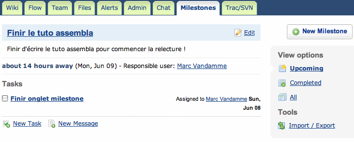
L'onglet
Milestones permet de définir des
dates limites. Il est possible d'associer des tâches ou des messages à
ces dates limites. Les tâches et messages ainsi créés seront également
visibles depuis l'onglet
Flow. Il est possible de trier les
Milestones pour afficher les prochaines
Deadlines, les compléter ou toutes à la fois.
On notera le lien d'importation / exportation des Milestones et tâches avec Trac ou Basecamp.
Vous pouvez maintenant créer votre propre projet sur un SVN à l'aide d'assembla.
N'oubliez pas qu'assembla propose ce service gratuitement ! Essayez donc
de fermer les espaces que vous avez créés une fois que les projets sont
terminés.
Je vous demande aussi de ne pas créer d'espace avec le compte que j'ai
créé pour le SdZ. Inscrivez-vous sur le site comme je l'ai montré au
début du tuto.
Dans ces annexes devraient encore arriver :
- Utilisation du manuel, récpitulatif des commandes et options ;
- Utilisation du SVN avec Netbeans et Eclipse (un client intégré) ;
- Les "Best Practice" avec le SVN ;
- Présentation d'un nouveau client graphique ;
- Présentation de TortoiseMerge.
Et voilà ! Même si ce n'est, pour l'instant, pas grand-chose, vous
savez déjà ce qu'est Subversion, vous connaissez également les fonctions
de base pour l'utiliser.
Avec les trois derniers chapitres de la première partie, vous aurez tout
ce qu'il vous faut pour l'utiliser de façon "basique" (pour les petits
et moyens projets, dirons-nous).
Je tiens à faire noter à ceux qui auront
créé un compte assembla afin d'essayer avec leur propre espace, que
Assembla propose ce service gratuitement dans le cadre
de projets publics, ce qui devient de plus en plus rare de nos jours !
Alors une fois que vous avez fini votre projet, pensez à fermer les
espaces associés pour libérer l'espace et ne pas encombrer leurs
serveurs avec un projet obsolète.
Enfin, comme ce tutoriel n'est pas fini, si vous voulez parfaire vos connaissances, vous pouvez toujours
télécharger ce livre
gratuitement (et légalement bien sûr). Il explique tout SVN en quelques
370 pages ! Sur ce, merci à vous d'avoir lu ce tutoriel.
Je n'ai en ce moment pas le temps de continuer ce tutoriel. Je reprendrai dès que possible... (à la fin de l'année ?)
Si quelqu'un veut m'aider à la rédaction, qu'il me contacte par MP.


 Trouvez une formation
Trouvez une formation


 Flux RSS News
Flux RSS News Twitter
Twitter Facebook
Facebook{kind=link}